前言
本书源起是 2019 年我在公众号「码斯基之矛」（现已改名为“悬想录”）上陆续发布的十几篇敏捷开发系列文章。
彼时我刚结束一段密集的研发带队经历，趁着热乎将它们一篇篇写了出来。那时还是一个古法写作、古法编程的年代。
如今重读，不少措辞看出当年行文之生涩，但内核没变：敏捷不是一堆名词和仪式，而是一套能真正落地的做事方法。本次把这些文章整理成册（共十四讲），按「理念与价值观 → Scrum 与迭代 → 估算与会议 → 实践与案例 → 视频讲义」五个部分编排，另附一篇【用敏捷管理家庭与教育】的扩展阅读，以及视频清单、推荐书单等附录。
这些东西，来自一个工程师的朴素想法：把方法讲清楚，再用真实案例验证它。书里有「套路先行还是干了再说」的两难，有「招聘流程」一词之差引发的返工，也有 Python 与 Java 编码风格的争论——都是作者研发现场亲历之景象。
如果你正在或准备在团队里推行敏捷，或许这些记录帮你少走一点弯路。 如果只是好奇，也能借此看到敏捷在真实工程现场的模样，当然，那是敏捷与软件工程曾经的模样。
—— 囧森Jonshon ，记于 2026年8月18日
第1讲 敏捷，套路先行还是干了再说？
敏捷(Agile)，从字面理解是轻量、快速、灵活之意。在软件研发中，敏捷代表着软件研发中一整套价值观和方法论原则，它既是管理方法，也含有技术策略。其目标是为了更好地应对快速变化的需求和日益复杂的规模化的软件系统开发。 在近20年的发展中，敏捷已逐渐取代传统“瀑布式开发”成为当代软件开发的主流模式，为现代软件工程效率和质量提供了保障。
“自底向上”还是“自上而下”？
敏捷的理念，有某种程度的通用性和普适性。可用于个人事务管理，也更适用于软件项目的协作开发，在非IT领域或传统行业也有大量应用实例。要在组织内推动敏捷实施，首先你需要是一位激情的变革者、学习者，并愿意冒风险去打破一些东西。以下几点是需要预先考虑的：
- 明晰组织的特性和业务类型
搞清楚组织特性和业务类型，是决定要不要推行敏捷、怎么推行的先决条件。常见的情况，新创小团队比成型大企业更容易推行敏捷，科技公司比传统型公司更有先天优势采用敏捷，敏捷在外资、民营企业中普及率则比国企、央企等高得多，等等。
对这个问题的思考和判断，常常成为一个组织敏捷推进成败的最决定性的力量，而往往基层的技术Leader或项目管理者不太需要思考这个问题。因为敏捷的推行，对企业管理文化和业务流程的变革冲击也是巨大的。
- 正确认知自己在组织内的角色和资源权限
毋庸置疑，一个人在组织内的资源调度权限越大，越容易实施敏捷。因为敏捷影响的不仅是做事方式方法，更会引起组织或团队文化的重构、业务流程的变化，甚至许多时候它要抗争传统的许多东西。所以，你至少是一位在组织或团队内有一定话语权的leader角色（技术经理或项目经理），至少能协调2-3个人一起做事。 - 认清自己所在团队状况及能力成熟度
敏捷的团队管理目标，旨在打造一个自驱动、相互补位、强战斗力的团队。这对团队成员素养提出了很高的要求。理想情况下，我们都希望团队成员个个能力强、态度好，但现实往往残酷。所以我们更应该关注团队成员是否有拥抱变化的心态和愿意不断尝试、接受挑战的勇气。我们视这样的气质会是一个团队是否适合尝试敏捷的关键因素。
朋友大飞曾给我分享过他在某航空公司的案例
大飞是计算机硕士，那时刚加入该航空公司不久，已有2－3年工作经验。对敏捷的理解，着重于前几年自己一些极限编程的学习实践（用户故事、重构及领域驱动开发等），曾参与过一次以前公司的Scrum内部培训，同时正在进行敏捷/Scrum更系统化的学习。
航空公司属于典型的体制内传统企业，主营业务与机票机务相关。大飞所在的信息服务部，属于运营支撑部门，负责全公司信息系统、网络等运维或二次开发及内部一些信息服务软件的开发。
部门领导安排大飞带领5－6个新人，完成一个有关配置信息管理的小型项目。团队成员大部分刚毕业不久，具备基础的技术开发能力，充满活力、对新事物满怀热情。
项目的主要目标，一为训练和整合团队，二是让新人有一个展现能力的机会，以期后有大用。同时，该项目也分配给了另外一个同样结构和规模的团队来开发。这样，2个团队就有了一种默契地竞争和赛跑意识存在。
怎样管理这个小团队、用什么样的流程和规范、技术架构等，都是大飞可以自主决定的，并且不需要上报给部门领导，只需按要求交付最终项目结果即可。
大飞根据项目特点、团队状况及自身兴趣所在，选择了敏捷和Scrum。项目的过程，让这些年轻的同事大开眼界，这次经历也成为了他们在软件工程领域、软件开发协作方面启蒙教育一般的存在。团队从敏捷的宣讲与认知开始，经历需求分析与需求故事化、迭代式开发，不断学习进步，逐步踏入敏捷之门径。
项目最终进行了1个多月，交付结果表现出的高效率和质量远达预期。相比而言，另一个团队的产出就逊色许多，该团队所用流程更偏向传统瀑布式软件过程，或者也可以说并没有什么章法可循。差异的产生，一方面因团队带队人经验有差别，也与团队所使用的协作和开发模式大有关系。
以上为一个典型的”自底向上”推行敏捷的例子。新的敏捷流程的采用，从基层团队开始（而非从公司上层宣传下达、基层执行），由基层自主选择。并且从这一个点的成功，可以逐步扩散、推广到更广泛的业务开发、更高层的组织架构中，甚而从非关键业务到核心业务。
新团队有较自由的发挥空间，没有既定规则和流程的束缚，可以放开手脚。管理层只关注最终结果，不关心团队用什么方法策略。这也说明，敏捷在新团队、新的或探索型项目中更容易推行。如果是组织内的关键业务，或者一个既有的成型团队、开发流程已经很成型，这反而加大推行难度，因为管理层的顾虑也更多了。 ## 另一个我曾经历的“自上而下”推行敏捷的案例
我当时担任某集团公司下属分公司负责人，该分公司负责集团软硬件产品的自主研发工作。因自身资源调度权限许可及新重组的公司尚未建立完善的研发流程，我可以全方位、按敏捷的标准打造整个公司和各业务团队。
比如，为使管理简单高效、扁平化，将公司划分为几个全功能的研发小团队（如互联网组，硬件物联组，数据智能组等等），各团队内部都具备开发一个项目或产品的完整工种；将公司全局的目标管理及各团队之间的管理，统一到OKR之下，各团队内部采用敏捷/Scrum进行项目协作（需要先确认项目是否适合用敏捷）；建立统一的Saas协作平台：文档协作、流程规范、项目任务、代码等全面使用线上Saas进行管理和协同。诸如此类。
这次敏捷实施，我倾向于将自己定位为一个团队总教练的角色。经过前期团队的敏捷宣讲、流程与规范制定、技术分享与培训，到操作具体的项目迭代、与产品经理梳理需求、担任项目经理(Scrum Master)角色、技术架构和开发等，逐渐过渡到放手让成长起来的团队成员接手部分管理工作和技术规划任务，再到仅需参与团队 展规划、OKR评审与制定、及时关注团队和项目状态、为团队管理和技术问题答疑等。
团队从中不断成长，我自身也得到更密集的敏捷实践和思考机会。通过这些实践，我们训练了更多的敏捷团队，锻炼出合格的Product Owner（类似产品经理）和Scrum Master（敏捷教练），以应对公司未来的快速发展。
所以，不同的场景下使用不同的推行策略，这也是敏捷强调应对变化的体现。是否可以“自上而下”，取决于实施者的敏捷实战经验、在组织中的影响及能获取的资源支持程度。
“套路先行”还是“干了再说”？
“套路先行”，即先向团队宣讲敏捷的理论、原则和方法，再考虑基于这些原则和方法指导团队实践。“干了再说”，则是指带着团队直接就开始做事，一开始别跟团队提敏捷提Scrum，直到用这套方法做出效果、团队自我觉得满意，再提出这是敏捷的方法论体系。
曾在一个创业型团队遇到这样的争论：
自己一上来就给团队PPT分享敏捷/Scrum、讲各种敏捷概念和定义，然后开动项目。进行了几个迭代之后，有团队成员提出置疑，说这些做事方式本来就是事物原本该有的样子——随需而变、迭代开发、增量交付，何必给这些已有东西套各种新概念新名词，说我教条主义太明显、操作过程生硬，并告诉我，“你应该先按这些方法做事，所有能高效出活儿的做事方法都是敏捷，出了效果你自然就敏捷了”，等等。我当时感到惊讶，当然也由此打开了思路，引发很多对敏捷的思考。
以现在的理解和经验，是套路先行还是干了再说，都不需要再绝对化了。你如果有绝对的把握、足够的信心可以确认自己的宣讲足够打动人心，而且你在团队有这种权限和影响力，完全可以套路先行。“干了再说”， 或许更适合你在一个需要谨小慎微、自底向上推行的环境，你需要用实际的结果来说明一切。当然，在实操的过程中，团队成员自然会有各种疑问：你为什么要这样做？迭代计划该做哪些事情？用户故事怎么提取、整理？等等，这时你仍然需要停下来给大家解释各种概念和名词，绝对的”干了再说”是进行不下去的。 不凑巧的是，自那次的争论之后，我在后续所有的敏捷带队经历里都是”套路先行”。
第2讲 敏捷，习惯的力量
“人的主观意愿和自律能力有局限性，通过建立持久的行为习惯，人们可以减少对主观意志的依赖，从而提升人的精力水平。”
当完成对组织业务类型的判断及确定了敏捷具体实施策略后，则需要开始着手为团队建立良好的规则、习惯和内部文化制度。
心理学家吉姆·洛尔在《精力管理》一书中曾写到：人的主观意愿和自律能力有局限性，通过建立持久的行为习惯，人们可以减少对主观意志的依赖，从而提升人的精力水平。这段描述，给我们带来了许多关于个人规划、团队建设方面的启发。
规则先行，习惯养成
规则，即指个人或团队按怎样的流程做事，哪些步骤需要约定或严格遵守，哪些事情不能做等等。人性天然不喜欢被束缚、向往无拘无束的自由，尤其希望规则由自己制定而用于约束他人。
那为什么还要徒增烦恼制定规则，或者遵从别人的规则？因为，规则是一种保护机制和效率提升工具。正如“红灯停、绿灯行”的交通规则，行人车辆若罔顾规则、各行其事，不仅安全得不到保障，也限制了人车出行效率。人人遵守规则，方能人人有安全、有效率。即便少数个别忽略规则，大部分仍按规则行事，也才使得城市的交通不至于混乱、瘫痪。
自由总是规则下的相对自由，人们的长久自由是源于规则的保护。
习惯，则侧重于人们心理上形成的惯常行事策略，以同样的行为和思考方式应对重复出现的问题，强调人的心理层面。好的规则被铭记于心，即形成了好的习惯。
当我们说一个人养成了某个好习惯，一定是这个人重复性、经常性地在遵从某个他认同的规则并按规则行事。这也是吉姆·洛尔想表达的，习惯为我们省掉了许多自律思考、战胜主观意志的时间和精力，而多出来的精力和生命能量可以去做更多有意义的事情。
那团队中的规则和习惯怎样产生？团队规则是否越多越好呢？
我们知道，一个全新的组织或团队，总是从没有规则开始的。团队规则常常以一个基础、简洁的预设框架起步，在不断地解决问题中完善和进化，应对未来可能出现的重复性事件。
预设的起步规则框架，常常来源于组织外部或者现有的社会准则，并时常由团队中经验丰富的leader或管理者以某种方式引入（比如，敏捷的基础理念和Scrum基本实践）。起步规则成了团队一切行为的开始和起点。
团队的特质及所处环境千差万别，所以寄希望于以一套现成的、完善的规则拿来即用、用之即胜是不现实的。别人的各种敏捷实践，并不就适用于自己的团队。 好的规则和习惯为团队文化建设保驾护航、提升了团队协作的效率。有无习惯、习惯的优劣，形成了团队与团队之间的差距。
团队文化与原则
有一些规则或习惯将成为一个团队的行为总纲，是一个团队制度建设的精神层面，我们常归结为团队文化和原则层面。这些原则或制度，它不涉具体执行细节，而是确保了这个团队的风格和气质，成为了影响团队一切行事的精神力量。
在较长期的团队管理实践中，我们曾逐步提炼出以下一些行之有效的行事原则（或准则）：
规则源于解决了问题
我们从基础的起点开始建立简单够用的团队规则和习惯，通过后续不断解决问题的过程中产生新的规则和完善规则。不是一上来就给团队强加各种名目繁多的、重量级规则。这正如判例制之于法律法规的形成：法官审理完一个史上从未有的案子，由此诞生了一条新的法律制度，以处理未来同样的案例。
规则演化即迭代，不断迭代以期逐渐完善，从简单到复杂。
每次遇问题争论不休后的解决、团队总结会议、独立的思考与提炼等，都成为了团队规则的来源。作为团队管理者和教练角色，应该在这方面给团队一个经常性的提示和示范。
总结而言，即 规则先行，习惯养成；解决问题，演化规则。
共同参与，契约决策
依据社会准则与建制，虽然一切组织或团队的规则，都需要某一小部分人预先引进，且时常带有某些人的个人色彩，但总体而言它们也是人类集体的、长期演化出来的结果。团队内部行事，除去那些基础的既定规则，总有更多问题的解决和新规则的产生，需要团队后续集体努力。
鼓励成员共同参与规则的制定，让规则成为了契约，而契约对团队而言即是一条法律。契约暗含的意味是：“因为你参与了制定并且同意该规则，你为何不执行？违背契约，团队给不了你信任和尊重！”。不仅只完成自己份内的事情，每个成员对团队整体发展，都应贡献自己的力量。所谓“从群众中来，到群众中去”，讲的也是这个道理。让规则来源于团队的自组织、自发产生，鼓励成员的契约精神和规则意识。
相信个体的自我驱动
敏捷团队在组建时倾向于选择有强烈自我驱动力的成员。自我驱动的人，知道自己的目标是什么、该把时间和精力专注在什么地方，拥有强烈的自我学习和接受挑战的意愿。人们常说的优秀的员工不需要太多管理，即是这个理。
团队拥有这样的成员后，要做的就是相信他们能把事情很好地完成，充分给予信任和授权。所以我们定下这样的准则：相信每个人都有强烈的自我成长意愿，并且发自内心希望把交待的事情做好。
拥有这样的意识和习惯，使得团队规则的建立基于信任基础，而不是基于不信任或人不行、人都有劣根性等认识（认为“人不行”的结果就是步步检查、时时监督），这对资源的节约和效率的提升作用巨大。
力量来自分享了知识
“术业有专攻，闻道有先后”。知识与方法，在人与人之间传播或分享是一个增量或裂变的效果，更多的人由此习得了知识和方法，这不同于物质交换的零和效应。
一个能力强的技术Leader需要通过知识分享和经验传播，让自己的团队成员变强，提升整体战斗力；一个优秀的管理者，需要经常性地传授自己的管理经验与方法给成员，以培养未来的管理者，有利于充分授权和组织长远发展。
在团队内部，好的思维习惯、方法、技巧、知识与资源等都应该共享。分享有助于成员建立更多的共识、培养情感，促进知识在团队内部的传播，加速整体的成长。我们会有意识鼓励一种分享与开放的文化。当然，这或者是对成员的一种价值观要求：不藏私，乐于分享。在初期选择团队成员时，这种价值观考量是非常重要的。
通过PPT演讲、团队的分享与学习制度的建立、团队总结会议、成员经常性写博客或总结文字、师傅带徒弟等等一系列方式，建立分享文化，一个团队也会越来越强。能够长久一起发展的人，通过这些交流与分享也建立了深厚的情感。所以，分享是力量之源，是团队凝聚力的纽带。
坦诚与透明
坦诚是为了提高团队协作的效率。对研发团队能力成熟度的衡量指标，除了资源投入度的考量，核心就是效率和质量的高要求。当团队方向确定后，具体做什么也很清楚了，剩下就是如何加速、如何保质保量完成任务的问题。
研发不是销售或商务，主要工作不需要在面对客户时有很多曲折的“套路”，不需要重点应对不确定的市场和不确定的人。团队内每天朝夕相对的是个性具体的、值得信任的伙伴。所以坦诚是信息传导、沟通的快速通道，不要让彼此还要花大量时间猜测你的言外之意或话里有话。需要牢记的是逻辑、事实和数据，让信息快速传达、有效沟通（如果是团队与团队之间、组织与客户/用户间、组织之间，如何坦诚则是另外一个话题，在此不做探讨）。
透明，则要求团队内部信息传达尽可能通透、上下可达。这包括成员对团队的目标、组织的相关信息、规则与制度建立的用意、下一步计划等都能有所知晓。尤其团队内部，应尽可能无保留让成员知悉团队的情况和发展计划，以促进内部目标一致。理解和熟悉，才是信任和长久与共的基础。
当然，”坦诚与透明“也需要兼顾几个原则：以不损害组织或团队利益为前提；以不伤害其他成员为前提。作为团队Leader，也常会因为组织或团队一项决议、举措思考尚未成型或者时机不当，需要对成员密而不宣，这其实是一种注重策略、负责任的表现。通常情况下，在平衡一些原则并方法适当时，坦诚与透明都是必要的。
相互补位
当海豹突击队搜索一栋建筑物时，速度太慢是很危险的，因此要移动得尽可能快一些。为了做到这一点：有两条规则需要遵守。第一条是随时分工，不需要任何人指挥。去做跟你前面那个人相反的事情–比如他搜索左边时你就搜索右边；第二条即随时切换领导，知道下一步该做什么的人就是领导者。
史蒂芬·科特勒，《盗火：硅谷、海豹突击队和疯狂科学家如何变革我们的工作和生活》
我们根据这条事例在团队中建立了补位的习惯，在实战中达到了很好的效果。补位的意识，无论对团队高效决策、任务执行，还是培养更多的项目管理者、Leader都大有裨益。没有绝对的、仅该一个人去完全的事情，在合适的时机，每个人都可以为团队的整体目标贡献力量。
配套视频
📺 配套视频：第1部分：从习惯谈敏捷研发 · Bilibili 囧森Jonshon
从敏捷宣言诞生到现在已近20年，敏捷理念及其各种方法、实践已深入到软件研发的方方面面，成为当代软件研发的主流协作模式，对其他行业也产生了深远影响。
以往因工作需要，这个主题曾给多个团队有过分享。本次考虑以录制视频的形式、并结合PPT的最新调整，分享给更多关注该主题、或希望对敏捷/Scrum有所了解的朋友。视频大约1个多小时，并分解成了多个10多分钟的段落，涵盖内容如下：
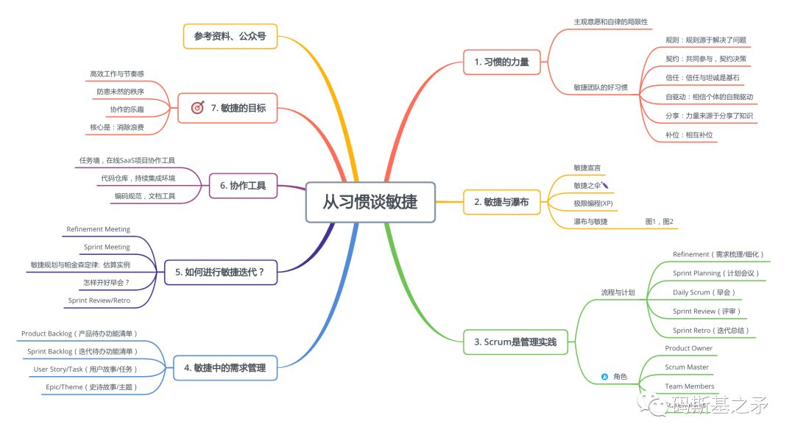
视频分享包含了敏捷体系的基本框架、流程、基本概念和操作。若要更深入理解敏捷、并用之指导软件研发实践，建议进一步阅读相关理论及实践书籍。
第3讲 理解敏捷故事，需要先知道这些概念
“ 软件研发是个复杂的工程过程，要理解这个过程，先知道一些概念与定义也是极好的。”
什么是项目？什么是产品？“研发”与“开发”二个词表达的是一样的意思吗？这几个问题，对于非信息、互联网领域工作人士而言，经常混淆难辨，甚而软件研发领域的人也常常含混不清。本文尝试做一番确定性的解释，以助于人们理解软件研发过程：
产品与项目
|
|
定义 |
特点说明 |
|
产品
|
在信息与互联网领域，产品本质上是指解决某类用户或客户群体需求或问题的一整套软硬件系统或相关的解决方案。 |
在软件研发领域，”产品”经常与”项目”这一概念相比较而存在，许多时候人们近似于用“事物”来理解产品这一概念。当我们在一个经营型组织内部提到产品时，一般表示该组织同时是该产品的生产者和拥有者。如微信、打车服务、邮件、汽车等都是产品。 |
|
项目 |
按照一系列能够交付的、可衡量价值的功能来组织工作，然后再划分为小规模、可衡量的工作单元。它是一个时间和工作量的整体。 |
项目只是一种思维模型，用于谈论一些模糊的工作，以区别于具体的事物（如产品）。人们用此思维模型来组织生产或进行工作协作。项目并非真实存在的有形“事物”，存在的只有产品。 |
|
交付型项目 |
该类型项目为确定的单个或少数几个客户开发和构建，需求明确且具体，完工后交付客户使用，验收后完成支付、交易。 |
为上述“项目”定义的一个概念细分。定制性强，一般不具备通用性。项目完工或上线后，有确定的付费对象。客户方的业务决策者对项目订单合同起决定作用。 |
|
产品型项目 |
基于某类客户、用户群体的市场调研而构建和开发的、需求不明确、产品功能需要不断试错和迭代的，用于解决特定业务场景痛点问题或需求的通用软硬件系统 |
同为“项目”定义的一个概念细分。产品立项源于市场的共性需求，具有通用性、标准性、创新性。产品早期可能没有客户/用户，存在较大的不确定风险。一个产品从立意到组织人力或相关资源进行调研、启动研发，即进入了项目工作模式，也即成了“产品型项目”。 |
|
研发与开发 |
广义的研发，是”研究”和”开发”的统一体，指一个新方案或新产品的整个从无到有的生产，再到发展壮大的完整过程。这个意义下，研发包括产品的定义、架构与功能的设计、技术的研究与开发、部署与发布等。 狭义的研发，常指软件或硬件的技术开发工作，更偏重技术工种的工作内容，也包括科学家、研究员等研究新事物新技术的工作。 |
通常在一个软件研发团队，不仅有技术工程师，还包括产品经理、项目经理（如果有的话）、UI设计及其他相关人员。 开发，一般指狭义的研发，主要是指技术工程师的工作内容；研发则还包括了产品与设计工作，运维与测试等。 不过，现实场景下，人们常常将这两概念等同而不作严格区分。 |
软件研发过程
软件研发行为的起点，一般从一个idea开始：组织或个人，因现实场景中某个问题待解决或者发现某个需求。问题或需求驱动了接下来的市场调研、客户/用户访谈等活动。如果是产品形态，则一份商业计划由此产生；如果是交付型项目，则一份需求描述被整理出来。继而，后续步骤随之而来：
项目启动或立项（会议）：评估预算与投入产出
需求深度梳理与产品框架计划制定
产品或项目发布计划、远期迭代计划
产品原型与需求说明文档（图、表形式或文字描述）
技术选型，团队组建，研发资源调配
产品整体功能架构与技术架构设计
阶段性需求细化：产品原型设计，UI/UX设计
阶段性技术架构设计
制定开发迭代计划，开始迭代
迭代评审与总结
测试，部署，发布与验收
回到“阶段性需求梳理“，开始下一轮研发迭代循环
直到所有的需求／功能被开发、测试、验收完毕
集成测试与部署验收，交付客户使用或产品发布上线
以上顺序为一般性过程，根据不同项目场景会有一些局部的顺序调整。
角色
整个软件过程的参与者，有产品或项目决策者、市场人员、研发团队、产品运营团队、售前售后及商务等。研发团队作为产品或软件项目开发的核心主体部分，包含了以下这些角色：产品经理、项目经理、工程师、UI/UX设计师等等。
产品经理（PM，Product Manager）
这个角色的重要性不言而喻。在软件或硬件产品研发中，产品经理一般承担着需求沟通与梳理的角色。他需要规划产品的整体功能架构，产品操作与使用流程等，与技术开发人员一起制定产品发布与迭代计划。
在敏捷/Scrum的语境中，也常使用Product Owner来指称这个产品的负责人角色，它与国内所用的“产品经理”表达的角色分工基本是一致的。
高级别的产品经理，更需要承担起产品的商业化(商业模式的选择)，对产品的目标用户群体、客户、市场进行分析，找到用户/客户增长的方法和策略，长期跟踪产品的发展及周边产品体系与生态(包括对竞品的分析与了解)，为公司/团队发展方向提供产品决策建议等。
该角色更多是一个功能性(分工性)角色，而非一定是管理角色。他需要与技术Leader一起规划产品的发展，参与到技术团队的开发迭代计划中。
项目经理
项目经理是一个使用较广泛的定义，不同的业务领域其所涵盖的职责范围是不一样的。在软件研发中，一般作为整个软件项目或产品研发的管理角色，负责研发团队对内、对外沟通与需求对接、任务分配、计划制定等。对项目整体运作情况与质量结果负责，向上汇报项目研发工作情况和对内管理团队。
许多情况下，该岗位工作内容倾向于日常事务性管理且工作量处于非饱和状态。所以，它可能由产品经理兼任，也可能由某个技术Leader（或技术经理）来主导。根据国内的情况，研发团队中一般难有纯粹的项目管理者，它总是或多或少要懂一点技术或者由其他角色兼任。当然，具体场景下也会有例外，比如规模体量很大的项目。
工程师
工程师内部则名目繁多，依据不同项目情况和不同的团队偏好而各有差异。如技术Leader/技术经理、架构师、前端/后端工程师、算法工程师、爬虫工程师、数据工程师、测试工程师、数据库工程师等等，甚至根据所用编程语言的不同也有几十上百种称谓（如Java工程师、Python工程师、C/C++工程师、Go语言工程师等等），由此可见技术工种的复杂性。
做技术的人，一般喜欢称自己为“工程师”，而且也希望别人这样称呼自己，但非技术人士常常更愿意用“程序员”这个词来指称和表达对这个群体“爱恨交织”的复杂情绪。严格意义上讲，“工程师”概念所涵盖的范围更广，而“程序员”仅指具体编码写程序的人。
工程师团队中技术较强、经验更丰富的，则一般成了技术Leader或技术经理，承担着技术团队日常的技术进步、技术任务分配、技术架构等技术管理工作。
小结
其他工种因篇幅所限未加以论述，作为一个完整的研发团队它们也是不可缺少的重要组成部分。
至于管理与技术角色的分工也并非绝对。所谓“能者多劳”，一个产品经理如果能力很强，不仅产品能力很出色，管理沟通能力也很好，那完全可以同时胜任或兼任项目经理。同理，一个优秀的工程师，技术超群且“文武双全”，也足以兼任一个团队或项目的管理角色。
第4讲 敏捷中的规范，是约定还是强制执行？
“ 流程规范是对团队协作过程的规定，有强制执行的味道，也是规则的一部分。约定则变通、灵活许多。技术规范和文档，也是团队必不可少的规则（如需更多了解规则与习惯，请参阅《敏捷，习惯的力量》）。”
团队里经验丰富并理性的带队者，往往知道该将团队的初始规则和习惯建设到什么程度，怎样算恰到好处。为团队建立初始的流程规范、技术规范、内部沟通与交流机制等，是团队一切具体工作开展的前提。规则与流程制度建设不仅是团队管理和建设的核心要义，也将为团队长远发展打下坚实基础。
经常，我们用“规则”一词来统一描述团队内部的所有行事准则、规章制度，而“规范”则常常跟编程规范、技术规范等联系在一起。在团队内部，这两个词所表达的意思常常并无差别（严格意义上，我们认为规则囊括更广泛的内容，规范属于规则的一个子集）。
作为一种选择，我们常以非常简单的规则开始、实践中不断完善演化。当然，你也可以一开始整得很多样性和丰富（关键在合适、够用），这取决于leader及团队的经验和能力。
流程规范
流程，即指进行一个任务的步骤，每一步需要做哪些工作，完成这一步后下一步又该做什么，需要怎样的工具支撑和角色参与，各个步骤之间的关系和进入条件是什么，步骤完成的标准是什么，等等。
诸如研发中的迭代计划制定、产品/设计/开发的协作与交互、产品发布周期与计划、验收与测试规范、职责与角色定义等，都需要在流程规范中定义。以下为一个典型的流程规范示例片段：
## 产品经理（PM）需要提交给 UI 和开发的输出物
- 当前版本计划内的完整原型图, 体现关键交互与操作;
- 功能细节相关的补充说明文档: 包括关键数据字段, 功能流程与操作说明等;
- 输出物要求能清晰指导UI设计和技术开发后续工作的进行, 否则交付物视为待完成.
## 团队会议制度
- 每次较正式会议, 需要有会议主持人. 主持人需要控制会议时间节奏, 明确会议关键与焦点, 防止讨论偏题;
- 应提前给与会人员发送会议通知, 告知如下内容: 时间, 地点, 会议主要内容或流程, 要求参与人员等
- 会议若有相关材料, 应提前发给与会人员, 以便提高会议效率, 提供关键性思考和讨论.
- 主持人或主讲人(若有), 需要提前做好会议准备, 发言内容等.
- 若为产品需求会议, 需要指定需求变更记录人.有了流程规范，相当于团队全体成员承诺了一份契约。契约预示着大家共同认可怎么做、不那样做就会有怎样的问责机制，所以也就有了强制执行的意味。通过这种强制执行，建立团队整体的行为习惯。比如，具备哪些条件才可以进入迭代计划会议、迭代交付验收的标准是怎样的、产品设计输出达到什么要求才能进入开发等等。
有的流程规范则带有“约定”性质，比如团队在项目研发中对信息概念和词汇的约定。
在曾经负责过的一个人力资源云服务的SAAS项目中，开发过程中发生了一些有趣的事，让我升级了对提前约定重要性的认知。
招聘流程是这个SAAS系统的核心概念，有工作流引擎的意味。作为产品规划和项目管理者，预设的语义是：
1. *招聘流程，是指企业完成招聘工作的一个完整过程，它是一个包含了如简历初审、安排面试、发放Offer、确定入职等一系列步骤的整体概念；*
2. *使用这个系统的某个企业可以建立多个这样的招聘流程，每个流程里的步骤数量和顺序可以按企业自身的需求自定义；*
3. *招聘流程中的任意一个步骤（如简历初审）可称为流程项，即一个流程里的子节点或里程碑节点；*
4. *每个流程项下可以有各种复杂的具体操作，称为流程项操作（如面试中有安排一面、二面、终面等，每轮面试，软件操作者需要填写一些信息及反馈状态）。*团队经过项目前期多轮的需求梳理和计划会议，在甚至已进行多个开发迭代的情况下，我都以为整个团队对“招聘流程“这个核心概念的理解与我预设一致，直到一次办公室的激烈争论发生：
当时我与一位工程师沟通需求和进行技术对接时，我们彼此交流了半天都没明白对方的逻辑，同时语气和音量越来越大。
逐渐我发现了问题所在：我意识到他将“流程“与我预设的”流程项“视为同一个概念，且当我在说”流程项操作”时他想当然认为是指“流程操作”–其实“流程项操作”是指在整体流程中的某个具体步骤里进行操作（如在安排面试环节进行的安排一面、二面等），而“流程操作”则指对流程整体的增删查改（如在某个招聘流程A内添加一个新步骤“邮件确认”，或者在招聘流程A内删除“简历初审”这个步骤，再或者删除整个流程A）。
当我将这一点给他详细解释清楚时，我们发现已完成的程序和文案设计已经有很多的混乱，因为这几个概念的理解错乱而最终导致了不少工作返工。
几点启示
1、这几个词汇本身一字之差，容易造成歧义和混淆；
2、我想当然地认为大家与我一样对概念的细分和理解一致，而没有提前强调清楚；
3、团队成员没能发现这里面的细节，以为自己理解了我的预设。
一个稍微复杂点的系统，都会有不计其数的概念。这些概念是对真实世界的抽象，是事物在信息系统里的表达方式。所以概念定义清晰与否，决定了软件系统中程序与文档的表达逻辑和清晰度，是软件系统研发的核心先决条件。
在那次迭代的结尾，团队进行了一次名为”批评与自我批评“的迭代总结会议，我又再次确认了与大家的约定：对每次功能需求中的核心概念要提前做出清晰的定义和约定，并让团队每个人都清楚和理解一致。
后来团队就有了事先约定的习惯（甚至团队时常会因为程序逻辑和设计需要自造一些新词汇或缩写，如CPMF–Candidate/Position Multi-Flow，候选人与职位的匹配关系存在于多个招聘流程中，等等）。
约定确保了团队整体对概念的理解一致，避免了不必要的沟通和争吵，提升了协作效率。
技术规范
研发团队的技术规范，指团队建立的一系列与技术相关的规则和制度，如所用的编程语言、技术框架、编程规范、接口规范等。
技术规范的重要性，好比人类自然语言沟通中遵守共同的语言规则一样。如用汉语或英文进行沟通的两个人，要用同样的语言、语言逻辑形式、相互能理解的词汇或短语、案例或论据方式等，也才能使得沟通、理解顺畅（如果你用汉语我用英语，肯定降低了沟通的效率、制造麻烦）。
软件研发更是一个需要团队分工协作、规模化生产的沟通交流过程。工程师们至少在开发同一个组件/部件时，需要采用同样的技术或编程语言，以顺利完成协作。一个团队没有基础技术规范的结果，当然是混乱和无效率的。
当然，工程师们需要遵循的是使工作的产出物（如程序）符合一致的技术规范或标准，至于用什么工具来构建产出物则并不需要严格要求（比如，对于一个Java后端工程师是该用Intellij IDEA还是Vim写程序就不需要做限制）。
编程规范之于研发团队，也正如人类自然语言中的词法、句逗、段落篇章、起承转合等的规则限定。团队内部制定编程规范的理想目标是，所有工程师的程序风格一样，就像出自同一人之手。规范的制定，应从关注最基础的命名、注释、英文构词法（名词、动词、形容词、缩略、主谓宾定状、偏正、分词、主动被动、单复数等等）、类与方法的结构等着手，在团队发展和项目进行中不断完善完整。
遵循规范，是一个需要长期训练的习惯。团队成员往往来自四面八方、带着各自五花八门的经验和旧习，为一个目标集结成团队。所以规范的确定，需要在团队内部具有公信力、前瞻性、全局性。
一个有关编程规范之Java风格与Python风格之争的案例记忆犹新：
2013年我曾带过一个团队，以Python/Django作为后端技术基础。
作为工程师背景的我，在2012年及之前的很多年基础编程语言一直都是Java。处于那样的一个过渡阶段，自己写的Python程序及给团队确立的编程规范，带有浓郁的Java风格（比如，将Python中的类、变量、方法等命名为驼峰式，而现在我们都知道Python一般以“下划线”来分割单词）。
当时我是明知Python有自己的PEP8语言规范和风格，但觉得Java的风格才是更有效率并合乎人类的。而且在Python技术社区当时的环境下，Python规范风格也不统一（有的是Python原生，也有大量是Java风格），当然也可能是自己夹带有某种程度的偏见和旧习惯在里面。
随着团队的发展壮大，Python原生程序员增多，他们对”有Java特色的Python规范和程序“有着天然的抵触情绪。一次两次找我沟通，我为此疏导他们的理由总是：
1、Python下线划风格的命名，编码击键的速度不如驼峰式（想象一下是大小写切换方便还是按一个下划线方便）；
2、Java有极其丰富、完整的编码规范文档体系可供Python学习和借鉴；
3、团队已建立了成型的Python编码规范，并且基于现有规范已经产生了许多代码。
多次沟通未果的情况下，几个工程师小伙伴开始联合起来找我”开会“，共同质询我编码规范的问题，大有”如果不遵从原生规范，老子不干了“的气势。最后，出于团队发展大局的考虑，我”和谐“地接受了大家的意见，因为这并非是一个“有关对错”的问题，而仅只是换一个习惯的问题。
即便是我们统一认识后，一段时间内我也并没有觉得Python原生规范与Java风格的规范相比有多大优势。当然，未来的一年半载以后，我也就逐渐被完全Python化了。这个事例得到的启发
某个个人的习惯并不一定就能成为团队习惯。规则的制定者，除了要富于经验、客观、顾全大局，更不能因个人喜好而有偏向。
如果一条规则已不合适团队的发展，改变它是必要的，而改变的过程也常常是艰辛的。当规则制定者同时也是团队管理者/Leader时，这个问题尤其明显。并不是所有团队里的成员都有勇气直接挑战上级主管的意见。
要能经常性看到技术发展的大趋势。最终能接受新规则并让团队形成一个新的习惯，某种程度上也意识到Python语言未来发展的大势所趋。PEP8看势头可能会一统Python规范的天下，未来与其他基于Python的程序库、技术框架的对接整合也迟早要求我们作出调整。
文档
文档是流程规范与技术规范的载体，是团队习惯和成果的最终沉淀形式。敏捷价值观中提到“可工作的软件胜过面面俱到的文档”，并不是说不重视文档或不需要文档，而是指要消除不必要的文档、不要以文档为中心来开展工作。文档应该作为手段而非目的，可工作的软件才是最终的目的，由此区别于传统研发流程以文档为目的做法。
文档的作用是辅助沟通、备忘和归档。软件研发的3个核心要素可归结为程序、文档、人与人的交流。文档是最终期望产物的中间形态，也是程序和人之间的桥梁。如下内容都可形成文档：会议纪要，项目计划，迭代总结，技术积累，产品设计，程序说明，感受与心得，流程步骤，技术规范等等。
勤于记录团队进步的过程与结果并文档化，本身也是一个极好的团队习惯。
第5讲 Scrum，一个橄榄球术语为何颠覆性地改变了软件行业？

“ 敏捷的起源，与瀑布模式的差异，Scrum是什么，Scrum如何管理需求，Scrum中的角色分工，怎样度量软件项目的工作量，都将在本文得到解答。”
敏捷，源起
2001年在一个滑雪胜地，17个具有反叛精神的软件开发人员聚集在一起制定并签署了一份重要文件：关于编码集的独立宣言。这份文件标志着“敏捷宣言”的诞生，它列出了四个核心价值观：
个体和互动 胜过 流程和工具
工作的软件 胜过 详尽的文档
客户合作 胜过 合同谈判
响应变化 胜过 遵循计划
敏捷宣言
这份文件的结论是，“虽然右边的内容更有价值，但我们更看重左边的内容”。这些词句多年来有不同的解读，但基本要点是：
将人置于流程之上。专注于开发可以工作的软件，而不是软件的文档。和你的客户一起工作，而不是为一份合同而争吵。在此过程中，要对改变持开放态度。
CAROLINE MIMBS NYCE，“敏捷宣言”是如何诞生的？
后来，人们根据这套价值观，衍生出很多的方法论原则。基于这些方法论原则，又诞生了许多实践方法，它们被统称为敏捷(Agile)方法：

当然，在敏捷宣言正式诞生之前，一些敏捷方法已各自有雏形存在，在各领域已有不同程度的实践。敏捷宣言正式发布后，这些实践方法就都归入了敏捷的大旗之下。因为它们要面对和解决的都是同样的问题：
随着技术的迅速发展和经济的全球化，软件开发出现了新的特点，即在需求和技术不断变化的情况下实现快节奏的软件开发，这对生产率提出了很高的要求。
这些方法共同基于迭代增量式的开发思想，鼓励用户/客户参与到软件研发过程中来，并倡导持续反馈、持续集成、团队自组织、自驱动等理念。
其中最著名的当属Scrum和极限编程(XP，eXtreme Programming)，前者侧重管理实践，后者则偏于技术策略。而XP所包含的主要实践方法（如持续集成、测试驱动、重构、代码Review等等）已成为当代软件开发的标准技术实践而被广泛使用。
本文及后续章节，将重点论述Scrum敏捷方法及相关实战操作，并辅以少量XP实践。
瀑布与敏捷
软件开发是人类的一项工程行为，与建筑、造车等相比属于相对比较年轻的行业。在这门新兴工程的起步阶段，软件开发人员自然不免向建筑领域借鉴了很多东西。比如具体构建前先得进行详细、长久的计划与论证，漫长的需求分析和设计，绘制图纸和形成施工文档，再到具体施工建设，测试验收等等。
一栋楼若已盖了一部分，发现问题当然不可能推倒重来。所以每个阶段都必须严格遵循流程，确保安全性、可行性和正确无误。前一个阶段作为下一个阶段的输入，每一阶段都需要进行确定性的验收，才能进入下一阶段。
除非项目最终完工，否则较难看到真正需要的产物，人们没法在中间的各个阶段对最终的产物进行检验和验收（验收的只是中间产物，图纸、文档、标准、施工流程等）。
这种开发方式（或称开发模式），一般称为“瀑布式开发”，相应的项目管理流程也称为“瀑布项目过程”。
随着技术进步和社会发展，人们的生产生活需要的软件越来越多、规模越来越庞大。借助新兴的软件工具体系，软件开发这件事本身也变得越来越高生产率，程序的修改与技术架构调整变得“家常变饭”一样随性，一开始的设计到最终看到的成品可能已经完全两样的东西。
软件工程师或程序员喜欢在不同的步骤之间来回切换，它们并不是按照顺序来排的。在一个项目的最后阶段，要测试整个项目，就会有这么一个问题：如果你在最后一个阶段发现了一个Bug，那么尝试回去修复它可能会很混乱，甚至是致命的。一些软件项目会陷入困境，根本不可能去交付了。
Michael A.Cusumano（MIT)
所以软件开发与建筑工程天然有着不一样的属性，传统的流程化、顺序式的开发方式越发不适应需求的变化。
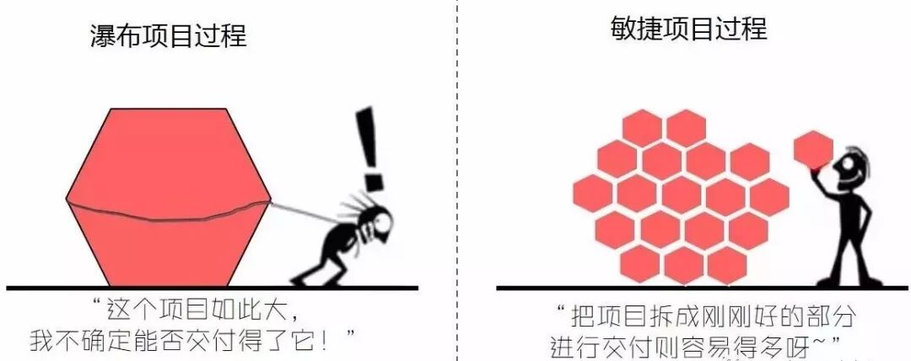
敏捷的方法，符合人们“分而治之”的做事思路。将大的事情分解成很多小的部分，并使得每一个部分都可以进行交付使用，每一次小交付都能让团队、让客户看到效果、得到反馈。而每一个部分的规划和构建，也会变得相对更容易。
瀑布式开发，让你迟迟看不到最终产物，每一步都是一大步、且走得更艰辛、难以被验证，充满了不确定和不安全感。在看不到最终产物的过程中，能验证的只能是产出的文档或其他种中间产物。敏捷做到了对真正需要的最终产物每个子集进行验证和测试。
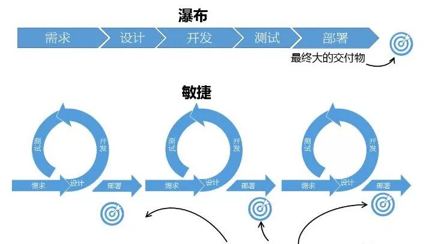
Scrum，一个橄榄球术语
实践的继续，使人们在实践中引起感觉和印象的东西反复了多次，于是在人们的脑子里生起了一个认识过程中的突变(即飞跃)，产生了概念。
毛泽东，《实践论》
敏捷的价值观是一种认知，要落实到行为上则需要具体的实践（指南）。
Scrum作为一种具体的敏捷实践，源于美国空军退伍飞行员杰夫•萨瑟兰（Jeff Sutherland）和他的合作者的共同创造。他们将自己的经验与业界的最佳实践融合，并借鉴“橄榄球”术语，提炼出Scrum方法（在橄榄球运动中Scrum为“争球”的意思，想象一下团队像打橄榄球一样迅速、富有激情、人人你争我抢地完成任务的情景） 。
作为一种软件开发管理实践方法，Scrum定义了软件项目运作流程、需求表达和管理方式、工作量度量及开发计划的制定规则等等。通常，我们也简称为Scrum流程，这也说明它更侧重于软件项目运作的管理流程方面。

上图为一个基本的Scrum流程示意，说明如下：
产品/项目需求以Product Backlog(产品待办功能列表，或称“待开发功能列表”)的形式呈现；
在每次的迭代计划中选取Product Backlog中的功能子集作为迭代的开发任务，该功能子集称为Sprint Backlog(或称迭代功能列表）；
每个迭代周期一般约1~4周（图中为30天），团队在迭代周期内循环着每日的开发、构建、测试等工作；
迭代结束后交付可工作的软件功能，并对已完成的迭代进行评审和总结;
开启下一个迭代的循环。
迭代，在Scrum的标准术语中即指“Sprint”（中文释义“冲刺”。准确来讲，中文语境下的“迭代“与Sprint还是有些许差异，本文及后续篇章将不作区分）。一个迭代即一个Sprint，确定的时间周期，确定的要开发的功能集合。一般，每个迭代都要进行需求分析、设计、开发/构建、测试、部署/发布等工作。
整个Scrum流程中最关键的几个环节：迭代计划会议，每日早会，迭代评审与迭代总结会议。
迭代计划会议
1. 确定即将开始的新迭代的目标；
2. 选取高优化级功能作为新迭代要开发的功能集合，并对功能需求逐条澄清；
3. 对选定的功能集进行时间估算和子任务分解；
4. 确定迭代周期，迭代评审和总结时间，早会形式等
每日早会
1. 团队站立式会议，一般不超过20分钟；
2. 早会主要目标：团队信息共享，及时发现问题；
3. 形式上需要回答3个问题: 昨天做了什么, 遇到什么问题需要解决, 今天计划做什么。
迭代评审与总结会议
1. 迭代工作结束后，向项目/产品的所有利益相关人展示产出成果，进行评审、验收；
2. 收集反馈意见，未完成、Bug等纳入新的迭代计划。
3. 总结团队在迭代中的问题：做的不好的，值得继续发扬的，改进与跟踪计划等
Scrum怎样管理需求？
User Story与Task
软件需求，往往从口头交流或者一份文字描述开始。“我需要一个手机App，能够发语音、图片、文字进行聊天，还可以发朋友圈”，“就像微信一样，还可以实现手机支付”，“我希望朋友圈发视频时能录制长达1分钟“，这种自然语言的原始形态，是不利于软件项目管理和具体开发构建过程的。
我们需要一种客户（或用户）、市场人员、管理者、产品经理、设计师、技术开发人员及其他相关者都能理解的需求描述方式，并且这种方式要方便于对需求的规划和管理。希望它不仅简单轻量、方便测试验收，同时还方便技术工程师设计接口、数据建模及技术架构等等。
在Scrum中，人们创造了Backlog Item这样的表达工具，它以功能条目的形式来呈现需求。不过常见的，我们用User Story(用户故事）来替代Backlog Item（User Story这一词汇最早来源于极限编程，后被Scrum充分借鉴），它们所涵盖的意义是一致的。
用户故事，是从软件使用者的角度来描述有价值的功能。好的用户故事应该包括：角色、功能和商业价值三要素。
其通常的标准格式为：
作为一个<角色>，我想要/希望/可以<做什么>， 以达到<目的>/<商业价值>。
简化版本：<角色>可以/希望<做什么>
User Story示例:
作为管理员，我可以对员工信息进行修改，以便于在员工信息错误时进行纠正。
大概是“用户故事”这一概念更直观形象、让人见名知义，所以人们自然而然地用它取代了Backlog Item。不过汉语这一直译方式，确是值得商榷，对于“初次相见”的人并不见得足够友好（因为在聊需求的时候，用户并不见得想和你聊”他的故事”，“用户使用场景”或可作为一个参考翻译）。好在，软件领域的人们都已习惯了这一表达，也就成了行业约定。
将用户口头的描述、文字记录或图形化呈现的需求，采用以上用户故事形式逐个拆解和整理，就形成了一份用户故事的需求列表（可以记录在Excel或Word这种传统的工具，也可以记录在Saas形态的需求管理工具）。 如下所示即为一个用户故事列表片段：
管理员登录
管理员可以创建员工信息
员工新建项目申请并进入未启动状态
项目责任人分配项目给执行者
责任人修改项目里程碑状态
我们看到，以上用户故事并没有遵照标准的故事格式，而是采用了一种简化描述。团队内部这种约定是很常见的，只要能确保团队成员都能理解即可。我们可以将这样的简短描述记录到某个工具中，在点击每个故事条目时显示详情，详情里写上更细节的需求描述、流程及验收标准等。在做计划、估算时，简短条目更方便管理、富于效率和易操作。
真实场景的复杂性，要求每个故事还需要辅助以一些补充的详细文字描述、原型图、UI设计图、架构图，甚至流程图、时序图等等。用户故事是敏捷/Scrum得以进行的基础，它不仅呈现需求，更是产品规划、项目任务管理、测试与验收的依据。
当开发某个具体功能时，团队需要在操作层面对故事进行再拆分成“任务”。拆分后的任务(Task），即表示完成该故事(功能）需要哪些步骤或关键环节。如下为一个典型的故事被分解为Task后的情况：
UI界面设计
后端API接口设计（文档）
后端API接口开发
前端页面及交互逻辑开发
接口单元测试
接口联调及功能测试
以上共有6个Task，它们共属于某个用户故事。只有当故事里的所有Task都完成了，这个故事才算完成。
Epic与Theme
Epic（史诗故事），可认为是一个大的Story，一般用于占位，它是未分解的或需求细节待确定的故事。在很多的场景下我们并不急于去实现某个大块功能，但却需要先了解或估算该功能大致需要的开发时间，所以Epic对于产品规划或做迭代计划是非常有用的。只有当一个Epic被纳入到就近的迭代计划里，才考虑将该Epic进行拆分和细节化。如下即为一个Epic：
管理员可对员工信息进行管理。
上述Epic中，我们使用描述性的标签以作为一个大块功能的记录或备忘，“管理员具体对员工怎样进行管理，有哪些具体的操作及数据要求，流程是怎样的”，这些细节我们并不知道（也暂不需要知道）。
另外，人们引入Theme(主题）的概念，以便于更好地管理一组用户故事，这一组用户故事常具有相似的特性并可以归入某个类别。主题类的故事是经过拆解的，具备一定细节的。这个概念的存在，也主要为了便于做迭代计划及团队沟通、协作。
工作量度量
故事点（Points）和小时
故事和任务的工作量需要进行量化，对故事量化使得项目规划有了可信依据。常用的量化方式为故事点（points)和小时，如给“管理员登录”这个故事分配6个故事点，则表示该功能的工作量为6。
注意，这个“6”并不表示任何时间的度量：它不是5天，也不是5小时。在敏捷的语义下，故事点仅是一个规模的度量，它因比较而产生相对意义。当我们说另一个故事（如“注册”）有6个故事点时，指的是“注册”这个功能与“登录”功能差不多的工作量；而若给“员工填写项目申请”分配3个故事点时，我们其实是指这个故事只有“注册”功能一半的工作量。
由此，团队开发项目时，需要选定一个基点故事，给它分配一个合适的故事点（如前面提到的“管理员注册”分配6个故事点）。后续所有故事的故事点估算都将与基点故事进行比较：与基点故事规模差不多则故事点一样，为基点故事的2倍则分配2倍的故事点，是基点故事的一半工作量则故事点减半，…，诸如此类。
当然，团队也可以根据具体情况进行额外的约定，如将1个故事点表示一个理想人天，这样也会带来更多的操作细节。
Task（任务）则用小时(hrs)来进行工作量估算。如任务“后端API接口设计”完成需要1小时。这里的小时估值，是指开发人员投入到该Task上的理想小时数。如果一个开发人员从开始进行一个Task到Task完成，时间跨度为5小时，但其实中间有3小时因为别的事情中断了Task的进行，那这个Task的理想小时数应该是2小时。
我们用理想小时数来评估一个Task的规模，即它的真实需要投入时间。这个规模量不会因为不同的开发人员接手而变化，变化的只是不同人员的开发速度。
有了故事点和小时的度量，我们就可以用【多少故事点/迭代】或【多少小时数/迭代】（即每个迭代完成多少故事点或小时数）来度量团队或成员的迭代速度。
人月是什么样的神话？
人·天和人·月都是项目规模的度量单位。1个人·天是指1个人工作1天的工作量。所以，10个人天可以表示“1个人工作10天”，也可以是“10个人工作1天”，或者是“2个人工作5天”。
项目规划中也常用“理想人天”进行工作量估算。一般而言，1个理想人天表示1个人除了投入项目工作其他啥事也不能干的完全饱和工作状态。当我们说开发某个功能需要1个理想人天时（换为标准工作时长即1个理想的8小时），是指1个人可能需要投入2天时间完成这个功能（如第1天投入5小时，第2天投入3小时）。
所以理想人天仍然是一个规模的度量单位，每一个自然人天规模量我们都需要乘以一定的系数以得到理想人天。例如，3个人共同开发一个项目用了30天时间，则项目的规模为90人天（自然人天数），该项目的理想人天可能为54（90 * 0.6=54，即一个人每天仅约4.8小时真正投入项目工作，投入系数为0.6，这也是现实情况）
人月与人天的定义类同，只是将天的维度扩大到月而已。所以程序员老司机们都知道《人月神话》并不是一个有关“人和月亮”发生的不为人知的神话故事，而是一段软件项目深陷计划与Bug泥潭并苦命挣扎的辛酸往事。
Scrum中的计划
人们常用“规划“一词，来表示更宏观、更长远的发展计划，如人生规划、战略规划。“计划”则更具体，一般指预先拟定的工作内容和行动步骤。如项目计划、迭代计划等。远期计划更显粗糙、偏重方向目标定义，短期计划则更具体、可执行性强。
一天或一周的计划，可以确定做哪几件重要的事、可细化到每个时间点；一个月或半年的计划可能仅制定几个要达到的目标（如App发布1.0版本，或写一本书出版），而不容易或者不需要确定具体有哪些待办事项。
在敏捷/Scrum的研发流程中，常用到4种计划：项目计划，发布计划，迭代计划，每日计划。它们依次从关注宏观目标层面，逐步过渡到周期更短、更具体的细节层面，层层细化、逐步求精。
长期计划定义方向和目标、统筹需要的资源，短期计划关注具体如何执行。项目规模越大，越需要兼顾长期计划和短期计划；项目过小，则可能仅需一个短期的执行计划即可。
项目计划（Project Plan）
有规模的项目，必然需要从一份项目计划（或推进计划）开始，作为整个团队的方向定义和行动指南。包括产品开发的远景规划，需要的人力、资金预算，其他相关资源的调度，时间节点规划，交付或市场计划等等。后续其他更具体计划的制定，将以此行动指南为基础，这类似于宪法之于其他子法律条款的关系。
在创业语境下的商业计划，也是一种项目计划：介绍问题背景，产品解决方案，推进计划，团队情况，融资及资金预算等。
发布计划（Release Plan）
在总纲性的项目计划确定之后，则进入发布计划阶段。Scrum里的发布计划，偏向于解决软件产品（或软件项目）的版本规划问题。如软件产品规划为几个版本（每个版本可称为一个Release，如V1.0、V2.0等），各版本的功能范围、边界，每个版本的发布时间，需要达成什么业务目标（如V1.0初步完成功能开发，网站上线试运行），各版本运营策略与数据指标设定等。
发布计划阶段，核心关注点都在产品及业务价值的考虑上。若是创新型项目或产品，人们也常常用“精益创业”的方法论来开展工作。
迭代计划（Sprint Plan）
迭代计划，则表示项目进入了具体的构建/开发阶段，并意味着开发所需要的资源、人力已经到位。这个阶段也是Scrum流程关注的核心。一个Release（版本，在发布计划阶段确定）里可能包含多个迭代，一个迭代一般1-4周时间。
对于一个持续推进的项目，团队倾向于设定一个固定迭代周期（如每次以2周为一个迭代），以便让团队有稳定的节奏感。当然，团队也常会根据具体情况对迭代长度有所调整，以适应不同时间节点的版本发布要求。
在迭代计划里，需要确定迭代的目标和迭代功能范围、迭代周期、投入的工种和人力、交付验收标准、评审与总结时间等。
每日计划（Daily Plan）
每日计划则纯粹很多，通常在团队每天的早会上确定：每个人回顾一下昨天做的事，遇到的问题，当天的计划。
计划的目的，是让每个成员聚焦在当天重要的事情上、成员彼此督促、团队成员彼此同步状态（彼此知道对方在干什么，能提供什么帮助和需要什么支持等）。这对于工作效率的提升极其重要，这也是敏捷能提高生产率的精髓所在。
除去个体的自我驱动，这样的每日检视、督促反馈机制，使得团队成员不可能有懈怠的机会，而需要在迭代进行中保持奋进的状态，不断为最终目标而战斗。
Scrum中的角色分工
Scrum团队中包括的主要角色有：产品负责人（Product Owner，PO），Scrum Master（SM），开发团队（Team)。Scrum鼓励集体参与，诸如Stakeholders（利益相关者，指与项目相关的管理者、客户、股东等）、用户等也常会参与到项目中，他们有时也作为团队的一部分被提到。
产品负责人（PO）
PO作为客户/用户需求代理人的角色，构建了用户与团队的桥梁。PO负责管理和维护着产品待办事项列表（Product Backlog，或需求功能列表、用户故事列表)，并确保团队清楚需求内容及优先级。
具体来说，PO需要定义业务需求是什么(What)及为什么这个需求重要（Why），而不需要关注需求的具体实现（Not How）；定义功能的完成/验收标准，并关注和分析项目交付物的用户群体、市场与商业模型等。
在国内环境下，”产品经理“是PO这一角色的替代和更通俗易懂的称呼。
Scrum Master（SM）
中文语境下，常将这一词汇翻译为”敏捷教练“，是类似足球教练一样的存在。他需要确保让团队遵循Scrum流程，时常提醒团队目标是什么，让团队远离干扰。要知道”教练是不应该上场踢球的“，所以SM更多是一个服务型的Leader角色，他需要培养团队的自组织能力。
当团队成功时，团队成员会对自身感到满意，而不会觉得是因为教练高超的管理和领导力取得了成功。所以，这不是一个应该去证明自己存在感的角色，而应该去帮助团队成功。
同样，我们也有”项目经理“这个词来指代这个角色（虽然它们经常并不是一回事）。毕竟，国内一个小团队的项目经理，经常是身兼技术Leader、项目管理、技术架构、开发工程师数职。而Scrum中对SM的定义则更显纯粹，他就是一个”教练“。
开发团队（Team）
开发团队的主体一般包括工程师、UX/UI设计师、测试与运维人员等，是软件项目最终的构建者。团队内部各工种常有各式各样细化的角色分工。（可参阅《理解敏捷故事，需要先知道这些概念》）产品界面、设计图、程序的架构与编写、测试与技术维护等，都得依仗开发团队。所以他们是软件研发团队真正的力量核心。
注：本文中相关图片来源于互联网，版权归原创作者所有。
参考资料
[1]. 敏捷宣言，
http://agilemanifesto.org/iso/zhchs/manifesto.html
[2]. 敏捷遵循的原则，
http://agilemanifesto.org/iso/zhchs/principles.html
[3]. 敏捷宣言是如何诞生的，
https://36kr.com/p/5107963
[4]. Mike Cohn，《用户故事与敏捷方法》，2010年版
[5]. Jeff Sutherland，《敏捷革命》，2017年版
第6讲 敏捷迭代：迭代之前

Scrum迭代正式开始之前，需要有一些准备工作，诸如需求的梳理、技术的储备、Scrum流程的预演等。初试敏捷，团队在一些流程协作上的困扰 必不可少，达成一致的理解也便于更快地推进迭代开发。
迭代，代表了敏捷最深层的奥义，也是Scrum的最精髓所在。虽然Scrum术语体系里更惯常使用Sprint来表示“迭代”，但中文语境下大家更喜闻乐见地使用“迭代”一词，它含有不断改进、不断试错的内涵。迭代的思维，自带人类思考的天性：
人们大概很难在一开始就把一件事的发展、结局考虑得尽善尽美，“计划总能赶不上变化”。
花了很大代价想求得一个完美方案，可能到头来仅获得一个漏洞百出、推导重来的结局。
常常总是在一个事情的进行中才开始真正理解这个事情、才想清楚了怎么更好地做这个事情。
人的一生莫不如是，有太多“如果能重来，我要xxx”的遐想。既如此，长期计划何妨做得更方向性一些、全局指导意义更强一些，而在行路的过程中再行具体计划、一边计划一边行路？而这正是敏捷/Scrum“迭代”里所凝结的思考渊源。
Scrum中的迭代（主要指开发迭代），既指时间也指功能集，是时间和功能集的统一体。当我们说“团队完成一个迭代“时，指在一个指定的时间段内完成并交付了相应的软件功能集；而谈“迭代周期”时，就特指团队工作的一个时间段。
敏捷开发中，发布计划、迭代计划、每日计划分别对应着版本迭代（或产品迭代）、开发迭代、每日迭代（要了解各种不同计划，请参阅《Scrum，一个橄榄球术语为何颠覆性地改变了软件行业》）。关于产品迭代，人们创造了”精益”的思维模型来运作和推演，本文仅重点讨论开发迭代。
什么时候可以开始迭代？
一个软件项目立项并启动后，项目Leader需要着手推动以下事情：调度需要的研发资源、组建团队、探索产品/项目前期需求、确立研发流程与规范。而这个准备阶段还不能启动Scrum迭代。一个典型的团队初始状态如下：
团队情况：项目经理（兼技术Leader）1人，产品经理1人，UI设计师1人，前端1人，后端2人；后端开发人员2~4年经验，Java背景；前端有网站开发经验，无Vue/React等前端框架技术积累。团队整体经验不足。
产品需求：产品经理在初期探索、调研阶段，尚未输出正式功能方案及产品原型。
流程与规范：没有正式的研发流程，无规范的管理需求方式，不知道怎么进行专业化的迭代开发。
经过3周多时间（除去周末约15个工作日），在团队正式开始第一个开发迭代之前，团队确立了以下事项：
产品经理输出第一个版本部分功能需求，包括：相关文字描述、前1~2个开发迭代需要的产品原型图；
通过内部分享与讨论，建立初始敏捷/Scrum开发流程、需求管理方式；
后端技术体系Java转成Python，前端可初步使用ES6、Vue框架进行开发；
确定初始技术规范：API接口规范，Python编程规范，前端编码规范，Git工作流程等；
前后端代码工程与框架建立，初始工程模块划分及技术架构，完成业务核心数据建模（DDD方式）。
总结而言，这个准备阶段的主要工作内容包括了：探索与定义需求，建立团队初始流程规范，技术前期架构及其他奠基工作。
再大的软件项目，也可以分解为以上量级的项目和团队规模起步。完成上述准备工作后，团队即可以启动第一个Scrum开发迭代。从广义上讲，以上3个周的准备工作，也同样可以安排成以Scrum迭代方式进行，这需要团队对迭代作一些变通和调整。
怎样选择合适的迭代周期？
假如一个软件项目整个研发周期预估需要一年，极端情况下将一年作为一个迭代。这个迭代里要进行从需求分析、设计、构建、测试与部署等系列工作，这就成了一个瀑布式的开发模式。这样做显然风险是极大的，因为一年后才能看到或交付产品，验证和反馈不及时将造成大量问题。
另一个极端，我们若考虑将一天作为一个迭代周期，这也基本不可行，因为这一天时间可能还不够迭代的流程运作成本（比如迭代计划、迭代总结，更别谈团队还得投入时间在需求讨论、设计、编码、测试部署等产出工作）。
通常做法一般是1~4周作为一个迭代周期。至于1周还是4周，团队需要根据不同时间节点版本发布要求做出调整。
如果是初尝Scrum，以1周作为“起始迭代”是个不错的参考。制定迭代计划需要团队整体投入时间，团队如果经验不足定个长周期迭代，发现哪里不对了，做计划的成本已经付出，有问题的工作量已经产出。即便团队在迭代进行中发现了问题可以马上中止迭代，这也给团队带来了折腾。
软件工程与团队计划，毕竟不是小孩游戏过家家，一个研发团队专业与否及彼此信任的建立都体现在这里。
迭代周期短，则团队通过短周期的试错、及时调整还来得及，不至于浪费更多的时间和心力。
当然，有一种情况下团队使用长迭代周期是值得的：团队对敏捷/Scrum的操作过程已娴熟于心，产品（项目）处于中前期开发阶段，同时团队面临一个大而完整的、有挑战的功能迭代集（需要团队投入相当的专注度才能出成果）。毕竟，每次迭代是要付出流程管理成本的，有数据统计团队花在需求沟通、Scrum流程管理上的时间成本 约占一个迭代周期的10%~20%。
一周时间能干点什么呢？
一周时间的短迭代周期里：团队可以熟悉一个较完整Scrum迭代运作流程，如Refinement(需求细化)、计划会议、每日早会、迭代评审和总结等；尝试开发少数几个小规模的功能（规模小并不意味着功能优先级不高），测试一下工程师的代码能力，团队整体的工程能力和协作水平；或者继续准备阶段没做完的事情，比如技术架构、数据模型的完善、技术调研等。
当然，如果要在项目开发早期的1周时间就交付使用几个功能，需要的考虑就更多了，比如UI设计是否已经就位、对体验与交互细节是否足够细致、测试与部署是否已经准备好等。这样的短迭代、快节奏，团队不免疲惫。项目若已上线，后续工作更多是小功能的增减、优化、Bug处理等，1周就是较合理的设置。
总之，这个起始的迭代是一次带着目的性和方向性的团队集体试错和学习，检测团队能力成熟度、检验流程的通畅、做一些准备和铺垫以备后续更快节奏、更高效地开发。
迭代里的工序困扰
一旦迭代启动，整个团队不会有人能闲着等待其他工序完成自己才能开始工作。仍然，以下问题也时常困扰着经验不足的开发团队：
1. 产品经理还没有想清楚需求，技术团队能动起来吗？
纷繁的需求问题，一开始就面面俱到、清晰细致自然是很难的。但一个软件中总有某些局部的功能与组件，是以往案例中可以抽取出来、借鉴和使用的，比如绝大部分软件系统（或Web平台）总会有登录、注册、用户权限等功能，移植修剪到新系统中总会需要时间。
需求显然会有很多还没有清晰、确定的地方，但总有已经确定的、清晰的部分，团队就可以动手开始做点什么。另外，技术团队还有技术预研的大量工作要做：对新系统中可能要用到的技术体系进行研究、学习和储备。
2. 数据模型都没设计好，我后端代码和API接口怎么写？
数据模型无疑是技术架构的核心，是连接业务需求与技术实现的核心逻辑结构。系统开发中技术工作以数据建模作为优先开始的第一要务也是自然而然的，但这也并非就注定了所有前后端技术工作都要依赖于这一步的完成。
没有数据模型，有经验的工程师可以进行数据模拟（比如根据已知的业务信息设计几个含关键数据域的数据对象，甚至是硬编码的数据对象）。
这个阶段，工程师需要关注的是整个业务主体流程走通、接口框架代码的确定，或者是对技术框架可用性进行测试、代码逻辑分层、组件切分等工作。再有，API文档格式与各种约定，也会消耗工程师不少脑细胞。
3. 还没有提供API接口，那前端又怎么能开始工作？
这也是一个伪问题。数据对象模拟，不仅是后端工程师可以干的事情，有经验的前端工程师也可以。前端的技术工作有静态、交互、数据展现等各工作块之区分，没有后端的数据提供，前端仍然可以先开发静态内容及一些常用、工具性质的动态程序逻辑、组件库，只要是有部分需求或设计图已确定。
自然，前端的各种技术预研也必不可少，完整的功能交付则也需要静态、数据与交互各部分全部完工。
4. 功能什么的还没有开发出来，测试、运维怎么介入？
在软件研发领域有点经历的人都知道，测试工作从来都不是在开发人员完成一些功能后才开始介入，而从来都是在需求分析时就得参与进来。对需求的理解与掌握程度，决定了测试工作的深度。
无功能可测时，测试工程师需要参与到需求的探索与分析中，制定测试计划、编写测试用例，准备测试环境、工具及相关技术，测试人力调度等。
对于早期项目，运维就是技术团队的工作内容之一。运维的工作在项目前期规模较小时，或可由测试工程师或技术开发人员兼任，但已发布的、成体量的软件系统，运维就不是一件轻松的、个别几个人兼任就可以搞定的事。
运维同样需要了解整个系统的功能需求，同时还有系统的线上线下部署环境，多少机器、服务在跑，机器及服务的各项性能指标、网络环境，软件的部署与发布流程，部署与系统构建的自动化等。
结语
如前所述，我们往往是在行路中才能把“后面该怎么走？”这个问题想得更清楚。快速进行一个迭代后团队就会发现：产品经理一开始的产品功能设计原来有严重缺陷、用户交互体验居然这么差；工程师觉得要达到产品的要求，以团队现有技术水平远远不够。不够能怎么办？要么功能就得砍掉，或者放在未来的某个时间再考虑，要么就赶紧招人吧。但是，这些情况在团队还没有动起来的时候常常无从知晓、或没有那么深切体会。
有人会说，“我熟知兵法，早就对各种软件研发套路和案例了然于胸“，但当下这个项目的情况真的就完全跟你以前了解的其他案例一样么？团队还是同样一群人吗？使用者或交付的客户场景也是一样的吗？以往用过的章法和套路，总是要在这样那样的具体场景中修剪组合才行得通。
这个意义上讲，迭代开发也可以理解为是一种探索式与启发式开发模式。团队的表现在后面的迭代里肯定会比前期迭代好，这种”好“体现在生产率和交付质量上（除非团队人员有大变动）。
通过不断的迭代推进，团队掌握了越来越多的数据和知识，不断涉入产品（或项目）的本质和规律，深入了解成员彼此的能力与个性禀赋，也伴随着新领域的探索和创造。
第7讲 敏捷迭代：我们怎样进行研发迭代？
本篇承接《敏捷迭代：迭代之前》，对迭代的具体操作过程进行了探讨和梳理。Refinement的意义、迭代计划会议怎么开、早会里的困扰、迭代评审和总结的过程和意义，这些凝结着敏捷软件研发一线的实战经验，都将在本文加以呈现。
准确讲，在迭代正式开始之前做的都是迭代准备工作，准备工作中占据了大量做计划的成分（如项目计划，产品发展规划等）。相较于一个具体迭代而言，这些计划都属于远景目标的范畴。若远景目标已定，后面每个迭代要怎么走，还得另立具体计划。
在敏捷开发领域，开发工作只有到了迭代（准确来说是开发迭代，后续若不作特殊说明一般都指开发迭代）这个层面，我们才认为事情开始足够具体，团队可以想得更清楚该怎么干了。从这点我们也更能清楚远期计划与近期计划各自的特点和作用了。
迭代计划或许该有两层理解：1、“计划”是个过程概念，通过一些具体事务阶段来完成这个过程（如迭代开始前的需求分析与评审、迭代计划会议等），这个过程最终要输出一份结果；2、“计划”特指输出的一份结果，是迭代开始后团队的行动指南和目标导引。
考虑到全面性，我们认为迭代计划既是过程、也是结果，过程和结果兼而有之。
一般地，我们将Scrum迭代的总体过程归纳为：
Refinement：需求细化
迭代计划会议：输出迭代计划
进行迭代开发：设计、构建与测试
迭代评审与总结
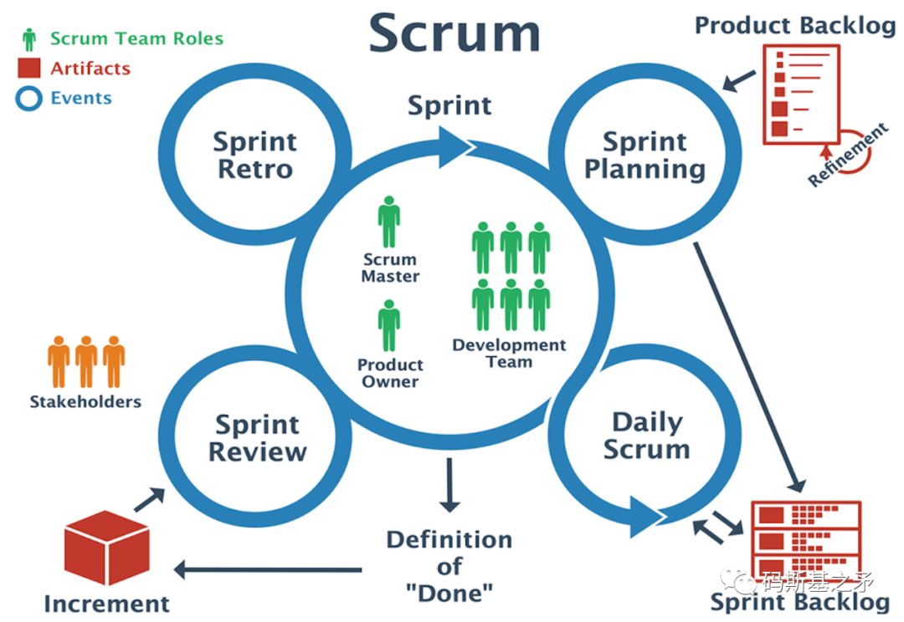
团队完成一个迭代的整体过程后进入新一轮迭代，重复上述步骤，…，直至项目完全交付。
为什么有个Refinement阶段？
在项目启动开发之前，我们已提过有一个迭代准备阶段，这是正式迭代之前的全局思考与预演。除此之外，每个具体新迭代之前，我们也需要一个“迭代前的准备”，或称Pre-迭代计划会议阶段（即团队在正式召开迭代计划会议前进行的准备工作），这就是Refinement。
Refinement阶段的主要工作，是预先对下个阶段要开发的功能进行细化和梳理、使需求达到一定的细节程度，让团队整体对这部分需求有个统一理解，以便团队在下个迭代中快速进入开发状态。 这也为下个迭代的计划会议节省了大量时间。这里的“下个阶段”所包含的需求内容，一般会大于下个迭代能开发完成的需求范围。
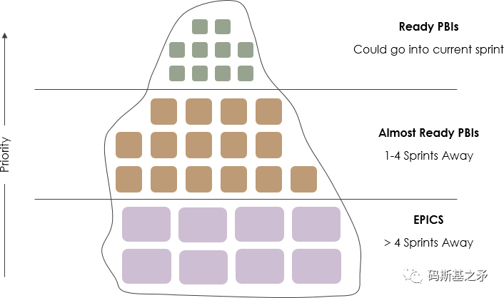
时间安排上，Refinement应该在前一个迭代的中后期完成。输出的结果要求达到：需要以用户故事列表的形式呈现，用户故事细节程度合适以便于工作量估算，并进行了优先级排序。
Refinement阶段承担了下个迭代最主要的需求梳理工作。所以，在迭代开始后，花在需求梳理上的时间会减少，在软件的开发构建上时间会增多（甚至绝大部分时间都用在开发、测试上）。
一个有关Refinement会议所需占用时间的经验数据是：约占迭代总时间的5% （如一个2周的迭代、按10个工作日、每天8小时计算，Refinement可能需要4小时或更多）。若每个人都要投入一定小时数，这对提倡“全员参与”的敏捷团队来讲，仍然是笔非常大的时间开销。
经常，我们采用一种策略性的做法：在需求尚存较大争议、梳理大方向范围阶段，考虑缩小Refinement会议参与者范围（如仅项目经理、产品经理、核心技术负责人参加）。这个缩小范围的Refinement会议，可能要进行多次（1-3次不等，并逐次扩大参与者范围），直至团队觉得已经可以很顺畅、高效地召开迭代计划会议。
当然，开发团队可以有权限给产品经理提Refinement会议准入条件，从而节省更多时间（如需求达到什么细节程度才可以召开Refinement会议）。
迭代计划会议
当团队完成上一个迭代功能交付后，将进入新迭代的计划会议（Sprint Meeting）阶段。计划会议的目标，是输出一份迭代计划，团队根据这份计划开展一个迭代内的全部工作。
要进入计划会议，团队除了要提前在Refinement阶段进行需求梳理，还有一些额外的条件需要满足。
计划会议的准入条件
经验不足的团队，开计划会议时常会遇到这样的情况：
- 一些必要的功能原型、流程说明没有准备好，导致无休止的、畅想式的讨论；
- 花太多时间讨论无关紧要的需求细节，会议主次不明（如为某个按钮要用什么颜色争论不休）；
- 漏洞百出的需求，在讨论中被团队自我否定和推翻，导致会议被迫中止。
计划会议前准备不充分的结果，不是浪费团队正式会议太多时间，就是导致会议择日重开。
我们整理了以下内容作为迭代计划会议准入条件：
新迭代要开发的功能范围已确定，相关用户故事已完全提取并确定了优先级；
产品（需求）原型图已足够完善、关键流程步骤清晰，并配有相关的补充说明文档;
主要交互逻辑清晰，最好已完成大部分需要的UI设计图，且UI经过团队内部评审；
关键概念实体数据模型、字段已定义明确，已做好充分的技术预研和准备。
准入条件可进一步阐释为：
总体上，应确保需求分析工作和UI设计走在技术开发团队之前（至少能提前1-2个迭代）；
一个迭代中若有UI工种参与时，应考虑在新迭代开始之前或新迭代的前1/3时间段内完成新迭代所需的全部UI工作；
关键数据模型若未能在迭代计划会议之前完成，则技术团队需要在迭代开始后迅速跟进，因为这是后续技术工作顺利进行的前提；
会议上要讨论的用户故事，要求已提前进行过初步估算（故事点），并辅以关键需求信息描述（如用户操作流程、数据属性、操作权限、初步验收要求等），在条件允许的情况下也应对一些用户故事事先进行任务(Task)分解。
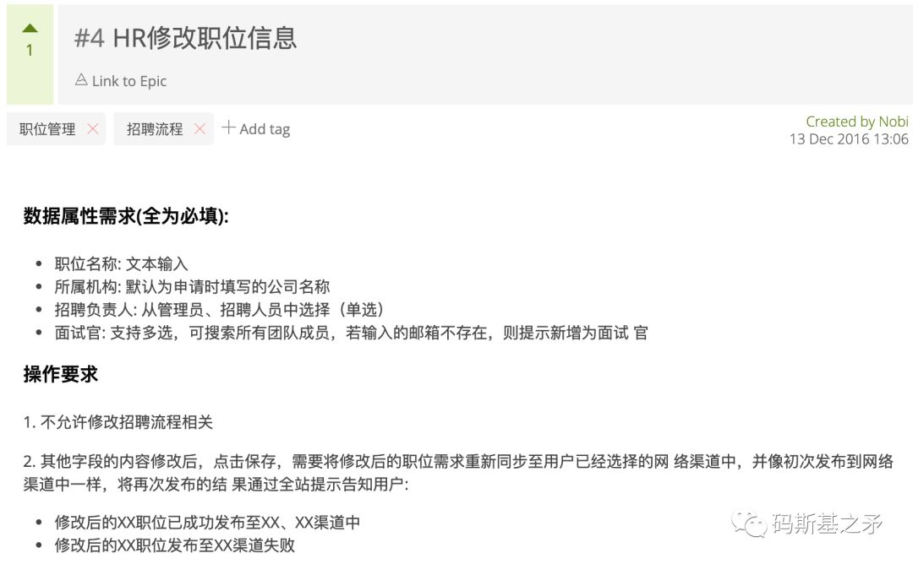
用户故事示例
计划会议怎么开？
为确保会议效率，我们给团队确定了以下会议制度：
每次迭代计划会议需确定主持人。主持人需要控制会议时间节奏、让与会成员明确会议讨论主次；
需要指定需求变更记录人，一般推荐项目负责人和产品经理都进行记录；
会议提前通知：告知具体时间、地点、讨论主题及流程、要求参与人员等；
应将会议相关材料（需求文档、故事列表等）提前发与参会人员，以助提前思考。
默认一般ScrumMaster（即项目经理）作为会议主持人，但理论上团队成员可轮流参与主持会议。
迭代计划会议的过程，以产品经理阐述本次迭代的核心业务价值诉求及重点需求范围开始，然后团队按优先级逐个讨论用户故事、并对用户故事进行分解与估算确认（在之前估算的基础上），最后确定本次迭代的目标和时间周期等。
迭代计划会议流程及其关注内容整理如下：
产品经理(PO)整体阐明新迭代业务价值、需求范围及目标；
团队逐条讨论User Story：需求细节、如何实现、验收标准等(DoD)；
将User Story进行故事点估算、任务(Task)分解、任务小时数估算；
确定迭代目标、时间周期、迭代评审与总结时间、早会形式等。
以上过程中第2步、第3步将花费主要的时间。如果团队在前期Refinement阶段对各故事描述已整理得非常细致、并且也进行了故事点估算，则在正式计划会议上需要做的仅是快速确认一遍（如有无补充或遗漏的需求细节、估算有重大偏差则进行重估、每个故事的验收标准是否定义完善等）。
团队可以考虑在对所有User Story需求细节都讨论完后再进行Task拆分和估算，也可以按故事需求分析、Task拆分、估算等步骤完整做完一个故事再进行下一个，这取决于团队自身偏好。（有关User Story、Task等概念请参阅《Scrum，一个橄榄球术语…》）
计划会议很大程度上，也是让团队全体对将要开发的功能及工作量达成一致的理解，让每个人在迭代进行中做到心中有数。
会议所需占用时间也有一个**经验数据：约占迭代总时间的5%10%**（如10个工作日的迭代约48小时）。我们常倾向于让Refinement的时间大于计划会议的时间，即Refinement花的时间多则迭代计划时可少花点时间。
这里仍然再次强调一下Refinement会议的重要性。经验不足的团队往往在Refinement阶段对需求梳理不充分，或者直接省去了Refinement会议。这导致的结果是：迭代计划会议变成了繁琐冗长的需求分析和讨论会议，这样的会议1-2天都开不完也是常事；部分团队成员可能会表现出极其不耐烦的态度，让团队对所谓敏捷/Scrum感到乏味和厌倦。
但更糟的是，如果这样冗长无效率的会议有组织高层管理者参与，这将直接影响管理层对敏捷实施的信心或信任度，甚至会议上的一些敏捷游戏环节（如扑克牌估算）也会被变味理解。
计划会议的产出物
作为计划会议的最终输出成果，迭代计划涵盖了一份文案性质的计划文档、一个有着优先级排列的用户故事列表、及团队每个成员头脑中对需求和工作量的共同理解。
文案计划文档，确定了新迭代的时期周期、迭代目标、功能范围、迭代参与人员等（为迭代起个不错的、便于记忆的名字，也是个不错的实践）。如下示例：
# Sprint-9-九妹与秋刀鱼
**时间周期**
2018年9月17日-2018年9月28日，去除周末，共10个工作日
**迭代目标**
- 完成项目管理功能模块遗留功能的优化与整改
- 版本发布：9月25日16点预发布，9月27日16点正式发布
**功能范围**
- 故事点共计90点，任务需投入小时数218hrs
- 迭代故事列表：Sprint-9 用户故事（内部SaaS系统链接）
**参与人员**
大雄(PO)、怡公子(SM/前端)、张小鱼(后端)、Lisa(UI)、小琪(产品经理) 、潜怀(后端)、北北(前端)
时间周期
需要注意的是，在迭代计划中设定好的时间周期，在迭代开始执行后是不允许团队更改的，无论功能开发情况如何团队都得在固定的时间点结束迭代。即固定的是时间，变化的是开发功能集。这不同于传统项目计划，先将要求完成的功能集确定，再让团队去估算交付时间，而往往团队给的这个交付时间会”严重“遵循管理学的“帕金森定律”。
迭代中的目标
上述文案中的迭代目标，是对团队在迭代结束后所要交付结果的一个价值描述和整体性说明。所以，“完成所有用户故事的开发”并不是一个合适的迭代目标设定，而如“团队熟练掌握Scrum工作流程”则可能是第一个迭代目标的合理设定，“产品发布线上测试版”则适合作为项目开发后期某个迭代的目标。
迭代中的用户故事列表
计划中的用户故事列表，可以用Excel来管理，也可以用其他SaaS形态的敏捷项目管理工具（如Tower、Taiga等），同时配合以实体任务墙。
任务墙的作用，便于团队后续早会中交流、讨论每天的工作进展、更新任务状态（团队总不能一直对着空气说话）。而且，墙上的任务状态变化，对于团队来说，将是一种实实在在的激励和反馈。
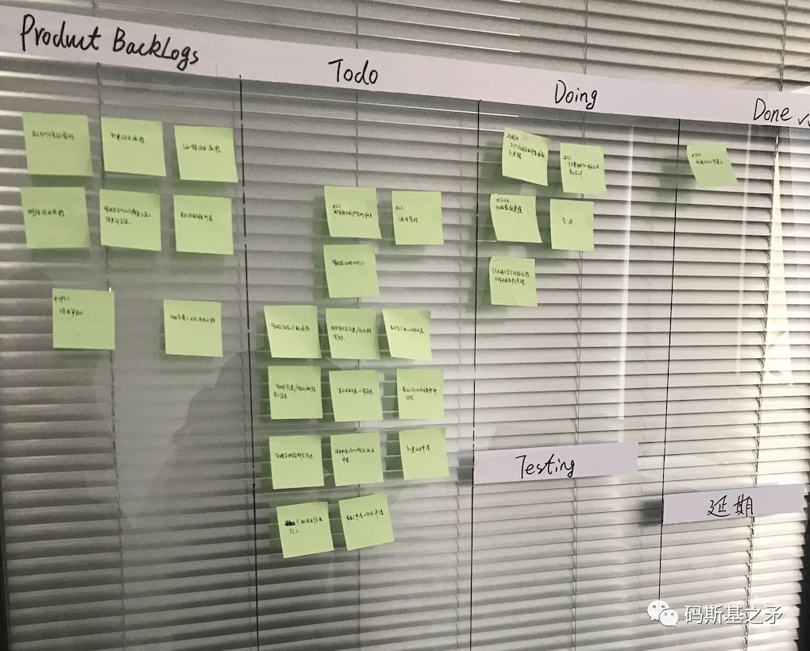
实战中，线上SaaS工具配合以任务墙是个不错的选择。
迭代计划的意义
迭代计划给团队带来了一种方向感和需求共识，同时也是团队给需求提出者及自身的一个交付承诺。所以一般而言，已确定的开发功能列表，在迭代进行中不允许随意调整。如有新需求、新发现的Bug，都将设定以优先级并纳入后续迭代计划中，极少非可控因素产生的极高优先级问题则视情况特殊处理。
在制定迭代计划时，团队常有的一个错误观念是：需求已经拆解并分析得很细致了、故事和任务也都进行了数值估算（都精确到小时了），那迭代计划应该是精确可达的（一个10天的迭代，那我们在10天之内一定是能完全交付所有功能的）。这样想，说明仍然没有理解目标与计划的真正含义。
我们多次强调，目标与计划是团队行进的方向和指南，而团队并不一定就可以按计划达到想要的结果（虽然理想中我们都希望能得偿所愿），团队只是通过计划知道了自己该怎么行路。
所有对用户故事及任务的工作量估算、团队对自身工作投入度的估计，都是基于经验数据。我们做计划和进行估算，采取的策略原则总是准确的模糊，而不是错误的精确。
我们说“管理员登录”这个故事与“管理员注册”差不多一样的工作量，所以设置这两个故事有一样的故事点数。这凭的就是经验。
团队有3个工程师，在10天的迭代里所能拥有的工作量投入约144小时（3*10*8*0.6)，也是基于经验。
团队在前一次迭代中的所有表现，为后续迭代提供了宝贵的、可借鉴的历史数据和经验。
严格讲，包括Refinement阶段对需求的梳理、计划会议中对需求的进一步讨论，都算制定迭代计划的范畴。这样算来，团队在迭代计划上其实花了很多时间，因为这比传统的项目开发模式中开发计划仅由团队1-2个负责人制定、完成后丢几个文档给团队费时多了。
但这也正是敏捷区别于传统的地方。传统开发模式可能没有考虑到，团队成员通过去读扔过来的需求文档和计划，遇到的种种疑问仍然需要去找人沟通、讨论。而且，仅反应个别人想法的计划和需求，难免在后续的开发中产生更多的问题（如需求的合理性、技术实现可行性、计划的一相情愿等等）。
敏捷理念下的迭代计划，是部分集中基础上的民主，强调了“人比流程重要”。
表面上看，团队整体花在计划上的时间要多于传统开发模式（但其实也并非确定性结论，项目中后期有的迭代计划时间花费会非常少）。
实际上，需求共识的达成、实现方法的全员探讨与交流，为行动执行过程节省了更多时间。另外，通过参与迭代计划的制定，团队成员在项目研发中的参与感得到极大增强，这促进了团队文化良性发展。
当团队开始迭代过程，虽然绝大部分需求及细节已在制定计划过程中确认清楚，但不可避免地，执行中的细节变化总是人神难测。参照用户故事列表，团队成员日常的需求沟通与交流由此产生，需求细节也日臻更完善。产品、UI、技术、测试等各工种在迭代执行中得以大显神通，日复一日地开发与构建，让迭代目标修成正果。
早会，是个问题
经典学院派Scrum流程认为，早会（Daily meeting）是敏捷团队每天开工前第一件事情，团队通过早会来启动一天的工作。
理想情况下，我们会制定如下早会制度：
项目组成员需要参加每天的早会，早会时间9:40，控制在15分钟以内；
早会主要的目标和用途：团队信息共享并同步每天的工作情况，及时发现与排除团队迭代中的问题，彼此制订当天工作计划，提高团队整体工作节奏和效率；
形式上成员需要轮流回答3个问题：昨天做了什么，遇到什么问题需要解决，今天计划做什么；
早会需要聚焦在当前迭代的问题上。问题提出后，若非重大共性问题，不宜花太多时间讨论具体解决细节，可考虑在早会结束后各自沟通解决.
刚开始的几天，团队内部一片其乐融融的景象：
规则如此简单、easy，每天的团队生活都很紧凑、富于节奏和激情。大家每天都有时间碰个面，有事儿说事、没事讲个段子也是极好的。
增进了情感和凝聚力不说，工作效率也极大提升。瞬间觉得找到了”活着“的意义，不再置疑自己工作的价值。
大家由此赞叹，真是一个”卓越“的制度设定！团队Leader也感觉一切尽在掌握之中。
但快乐一般只是幻觉，事物的真实样貌往往都不那么美妙。
2周后，下面的情况就出现了：
“如果无事可说，大家都开始讲段子，那还开什么早会呢？或者有必要天天开浪费时间吗？”
“我前天、昨天都啥也没干成，今天该说点什么？总不能天天说卡在那个问题上吧？”
“感觉自己像个机器人，每天要重复3句话：我昨天完成了xxx，没啥问题，今天准备做xxx“，…
开完早会才能正儿八经开始干活，“反正我一进入工作状态，马上就要被开早会打断”
以往到公司更早的人，现在掐着点赶过来开早会，“反正开完早会才开始干活呀”
每天等着人催促时才磨磨蹭蹭聚到一起，这真是”一天的晦气从早会开始”。
一下子，早会变成了团队每个人的心理负担，成了整体的敷衍、新的拖延。如果任由这些状况恶化，无疑是对敏捷价值观一种极大的伤害。那么内部讨论一下，调整为：
早会隔天开；
项目负责人询问任务墙上的各功能进展；
大家对着任务墙修改故事/任务状态，讲述这两天遇到的问题、今天的计划；
没有问题就不讲段子了。
这个调整最大的变化是：从以往关注每个人每天的工作情况，转变为关注具体的事（即进行中的任务）。根据Scrum任务分配的规则，一个功能可能会分配给多个成员在开发，但一个成员却不太可能分配到多个任务中（即便有，每个任务也只可能有一个主负责人）。这显然有助于消除原有早会形式的冗繁，一个功能的进展情况只需由一个人来讲述即可，每个人不再被强制性要求发言。
新的调整后，经过几周又有新问题：
以往每天开形成了心理习惯，现在隔天开每天还得想一想”今天要不要开会？“； 没有以往每天早会的彼此督促、压力，一些团队成员的状态和效率可就大不如前了；
不发言的人倾向于总是不发言，早会的“全体民主”氛围逐渐又被“个别的集中”所取代；
可能怎么调整都有问题。那我们需要对抗的到底是人的劣根性，还是得学会接受事物的本真从来都是遍地瑕疵？
早会有无必要？到底该怎么开？这真的成了团队纠结的问题。
我们尝试摈弃形式，回到初衷来解答这个问题。敏捷的价值观及相关实践告诉我们，在项目开发过程中要及时发现并反馈问题，无论这种反馈是来自客户、或是团队自身，都有利于团队不断改进和快速进化。
所以，我们确信早会的本质目标是：团队经由早会达到信息共享，及时发现问题，对将要做的事情制定计划。基于此，我们认为早会是敏捷开发的”应有之义“，只要是实现了本质目标，早会的形式化环节可以有百般的变化。
所以，早会是”每天开”还是”隔天开”、是否需要每个人发言、是聚焦任务还是关注人，等等，都不再重要，每个团队在自己的实践中会找到合于自身的理解并作出相应的调整。
迭代评审与迭代总结
迭代评审会议（Sprint Review）
当完成迭代中的用户故事开发和测试、并通过验收标准后，团队将已完成的功能打包成可交付的软件增量，并据此召开迭代评审会议。迭代评审会议的时间，一般在已计划好的迭代结束时间点前（即迭代快要结束时），时间占用约1~2小时。如果这个时间点还有计划的功能未完成，团队也要停止所有开发工作，将待完成功能纳入新一轮迭代。
迭代评审会议包含以下内容：
参与者：团队全体成员及项目主要的利益相关者；
目的：从项目利益相关者（一般是客户或组织管理者）和团队内部获取反馈。评审不是进度汇报（虽然它部分含有这样的作用）；
过程：团队演示“完成”的工作成果，讨论当前产品待办列表（用户故事列表），探讨下一步工作。
输出：一份修正后的产品待办功能列表，为后续迭代提供输入信息。
迭代总结会议（Sprint Retrospective）
迭代总结会议一般在迭代评审结束后进行，主要对迭代中出现的问题进行反思和复盘。
迭代总结会议需要讨论3个核心问题：
有哪些做的好的要继续发扬
出现过哪些问题
改进计划
会议安排记录人，记录讨论中产生的结果，便于后续迭代回溯与跟踪。迭代总结是团队一次很好的学习、成长的机会，是一次整体的认知整理和深度思考。团队要在以后的工作中表现更好，迭代总结无疑是整个迭代流程中的灵魂操作。
有关迭代总结的几个要点：
团队成员要提前准备发言内容
以“批评与自我批评”的态度对问题进行讨论
杜绝尽说好话、不反馈真实问题的团队氛围
会议纪要整理后邮件发送全员，并纳入团队文档系统
下一次迭代总结时逐条对照检查上次的问题是否有改进
标准的Scrum流程中，迭代评审与迭代总结是两个分离的会议。大型交付型项目也的确需要如此，每次迭代交付物都需要客户方或需求方严格测试验收方能上线运行。但不无变通地，团队或者就可以在一个下午的时间里开完迭代评审后紧接着进行迭代总结，这在实践中的效果很好、也节省了时间。人们对记忆犹新的事情、细节，也能反思得更深刻。
结语
伴随这一场激动人心的敏捷迭代之旅，团队经历了发现新方法时的亢奋、需求争论时的针尖对麦芒、新鲜感丧失后的乏味、不断迭代的压力与疲惫、反思时的灌顶醍醐与升华、成功交付后的举杯相庆。
置疑和争吵，信任可化解；沮丧和疲惫，成果以消弭。敏捷喻义之下，团队内部必须彼此信任，每个迭代必须交付一定的成果，这是价值观要求。
或有Leader对团队说，“与我共事会很有压力，但我会确保每个人都过得充实、体验什么是快速成长”，此或已释出敏捷迭代之真谛。
第8讲 敏捷迭代：一份简易 Scrum 流程规范示例
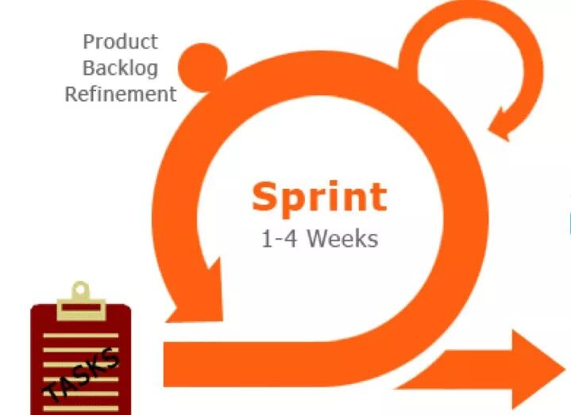
题图来自互联网，版权归原作者所有。
该Scrum简易流程规范，曾在一个小型团队中试用，从无到有历经半年的迭代、修正而成形，用于中小规模敏捷软件项目研发已足够。可结合本公众号《敏捷迭代：xxx》系列文章来理解。
Refinement（需求评审与细化）
在正式迭代计划会议之前进行，可能需要1-3次；
第1阶段：先局部人员(如产品经理，项目经理等)进行大功能范围与关键功能流程的确定；
第2阶段：团队全员参与需求的细节讨论与评审；
花费时间：约占迭代总时间5%-10%
讨论范围：后续的1-2个迭代的需求，不宜过多涉及实现细节；
主要内容：对User Story提取、澄清、拆分、排列优先级。
产品经理（PO）提交给 UI 和开发团队的输出物
当前版本计划内的完整原型图：体现关键交互与操作；
功能细节相关的补充说明文档：包括关键数据字段，功能流程与操作说明等；
输出物要求能清晰指导UI设计和技术开发后续工作的进行，否则交付物视为待完成。
UI评审与优化
进行时机：新迭代开始之前或新迭代的前1/3的时间段内；
已包含主要功能布局与设计风格：菜单、弹出框、导航、按钮、字体/颜色等；
讨论主要交互逻辑/页面元素是否完善、合理；
要求当前开发迭代或后续1-2个开发迭代需要的UI功能已完成。
迭代计划会议准入条件
原型功能体系足够完善，关键流程步骤清晰，关键概念实体数据结构/字段已定义明确；
主要交互逻辑清晰、明确，产品功能有相关的补充说明文字；
User Story已完全提取，并确定了优先级；
一个典型的User Story包含如下Tasks(任务)：
API接口文档
API接口开发
接口单元测试
UI页面设计及交互细节
前端静态页面开发
前端组件开发及API接口联调
迭代计划会议（Sprint Meeting）
产品经理(PO)整体阐明新迭代业务价值、需求范围，功能开发目标；
逐条讨论User Story：功能细节，如何实现，完成/验收标准(DoD)；
将User Story进行任务(Task)分解、故事点估算、任务小时数估算；
确定迭代目标、时间周期、迭代评审与总结时间、早会形式等。
每日早会（Daily Meeting）
项目组成员需要参加每天的早会，早会时间9:40，控制在15分钟以内；
早会主要目标：团队信息共享并同步工作状态，及时发现问题，制订当天工作计划；
形式上需要回答3个问题：昨天做了什么，遇到什么问题需要解决，今天计划做什么；
聚焦当前迭代问题。若非重大共性问题，不宜花太多时间讨论具体细节。
产品经理在迭代进行中的职责
承担需求后续的沟通与澄清；
规划产品后续迭代的功能(功能与交互的完成要走在新迭代开发前面)；
必须参与团队的Sprint Meeting(计划会议)，迭代评审及迭代总结会议。
迭代评审与总结
在迭代结束前召开迭代评审和总结会议；
对迭代完成功能情况进行汇总、评审、查缺补漏，未完成、Bug等纳入新的迭代计划；
团队视情况可将评审与总结会议合二为一；
迭代总结：做的不好的，做的好的，确定改进与跟踪计划；
会议流程如下：
迭代成果演示与评议
梳理功能列表完成情况
迭代总结：完成成果、出现的问题、改进与跟踪项等
后续迭代需求说明
项目经理（SM）职责
组织团队参与需求及UI评审与讨论；
负责对User Story进行整理和拆解；
组织团队进行Refinement会议、迭代计划会议、早会、迭代评审会议、迭代总结会议；
经常性提示团队不要偏离目标，避免浪费和提高效率。
会议制度
每次较正式会议，需要有会议主持人。 主持人需要控制会议时间节奏，明确会议关键与焦点，防止讨论偏题;
应提前给与会人员发送会议通知，告知如下内容：时间，地点，会议主要内容或流程，要求参与人员等；
会议若有相关材料，应提前发给与会人员，以便提高会议效率，提供关键性思考和讨论；
主持人或主讲人(若有)，需要提前做好会议准备，发言内容等；
若为产品需求会议，需要指定需求变更记录人；
一般，每周五17点为团队内部分享和总结时间(技术或其他)。 总结团队本周的问题，交流技术或其他。
第9讲 敏捷规划与帕金森定律

图源 | 互联网
“作为管理学三大定律之一的帕金森定律在职场有着广泛的表现，在软件项目研发中也不例外。除了减少组织层级及在少量节点设置时间冗余，采用敏捷的项目规划方式，也能很好地规避帕金森定律的负面影响。”
1958年，英国历史学家诺斯古德·帕金森通过调查研究，出版了《帕金森定律》(Parkinson’s Law)一书，用来解释官场或官僚主义现象。该定律在时间管理上的解释是：只要还有时间，工作就会不断扩展，直到用完所有时间。
MBA智库百科
帕金森定律在软件项目开发场景中表现为：无论给一个项目多少时间，时间总会被耗尽。可进一步解释为：如果给团队分配了充裕的开发时间，团队总会将所有时间用掉。
项目计划中的“官僚主义”
先来看一个经典的项目计划故事：
客户要求项目10天完成；
老板为了给自己留缓冲时间，给经理说8天；
经理为了给自己留缓冲时间，要求主管5天搞定；
主管也留了缓冲时间，给员工说3天搞定；
然后，员工就只有3天时间，搞了一个漏洞百出的东西；
最后，客户本来能拿到一个8天的质量较好的东西，实际拿到的东西只花了3天时间。
来源：
以上是一个“自上而下”的任务下达和项目计划过程。现实中虽然少见这种简单、戏剧化的场景，却也很讽刺性地说明了一些问题。
我们看到项目计划时间被层层压缩，组织层级越多、时间被压缩得越厉害。如果管理层一定要求员工在3天内拿出一个10天质量的东西，撇开其他因素不谈，加班将不可避免（甚至加班也完不成任务）。可以想象一下，这个团队的管理方式，以及在这样的团队工作是怎样一种癫狂状态。
如果一个团队，多年来一直采用这种“按层级压缩时间”的方式运作，对团队效率的影响将是致命的。项目经理给你安排任务，说得言之凿凿，但你心里清楚，项目经理的计划肯定会有很多水分，他给的Deadline（最后期限）不是真的。你按计划行事，最后完不成，项目经理会触发项目延期。
这种节奏下，大家对承诺、对项目计划看得很随意，执行力非常差。而且团队成员越来越油滑，俨然一个官府衙门。这样的团队，说严重一点，价值观都出了问题。
进一步分析原因
1. 传统组织中管理层很难知晓基层执行细节
即便是离软件项目更近的IT/互联网领域，也不是所有管理层都懂技术。或有技术出身的，若长时间脱离一线进入管理岗位后，对快速变化的技术细节也会逐渐模糊。
管理层不知道基层做事的细节，做计划做决策时又不愿意（或条件不允许）提前花时间进行细致调研，武断拍脑袋式作风将难以避免。同样，这样的体系下，身居管理层也较难参与到项目执行细节中。
2. 缺乏互信的组织文化
表象上我们看到的似乎是人性的心理定势，本质上是“官僚文化”导致的管理者与员工信任缺失。管理者潜意识中认为“团队肯定会用掉所有给定的时间”，原本可以给8天的时间一定要压缩到5天。而员工心里清楚管理者的心思，也自然要求更多时间给自己留有余地。这样双方会形成一种彼此猜忌和怀疑的心理恶习。
如何规避帕金森定律带来的负面影响？
既然是因为层级太多导致了项目时间被层层压缩，自然，我们想到减少组织的层级就可以减少时间压缩。比如，客户要求10天，只在老板这个层面下达8天的任务，同时让团队明确这就是Deadline，无延期的可能；或者只在经理环节设置Deadline，…。总结而言，应该考虑只在唯一的环节设置冗余时间。
从这里我们也可以看出，为什么现代企业组织架构更推崇扁平化、小团队模式。
但仔细想，上面故事中8天计划时间的设定，好像也并没有什么依据。怎么就知道8天时间能完成项目？是先经过基层团队评估、再提供给高层拍板，还是单方面只由老板定的？
显然，“组织扁平化”或“只在一个环节设置冗余时间”还不足以解答这个问题，我们需要更“科学、量化”的项目时间规划方法。这就是“敏捷规划”要解决的问题。
敏捷规划与估算
“规划”，在敏捷上下文里，主要侧重于指制定项目计划的过程，常与“估算”联系在一起。“估算”作为敏捷规划中一个非常重要的组成，是预先对工作任务量及团队生产力（或开发速度）进行数据化估计和度量。有了量化的数据，做计划就有了信心依据。
初建团队，一开始是没有任何历史研发数据的，这时候团队会以一个粗糙的、甚至拍脑袋式的迭代计划开始工作（当然，团队只要不全是新人，以往的工作经历、项目经验都是新项目开始的基础）。但只要动起来了，耕耘1-2个迭代了就有了数据。历史数据就成为后续迭代重要的参考，如：多长时间内完成了多少用户故事、各工种投入的人力及时间、缺陷率有多少，等等。
所以，所谓的敏捷规划，并不能一开始就可以给管理层提供一个较准确的项目时间（也不建议这样做，前面提过，这个时候“帕金森定律”的心理定势会起作用），而是会告诉管理层，“我们将预计进行多少个迭代后交付这个项目”，而这每个迭代时间周期到底多长是暂不确定的，只会有1~4周这个经验范围设定。这种“进行多少个迭代后交付项目“也仅是一个粗糙的估计而已。
任何项目计划方法，都不能做到精确可达，都只是一个方向和目标指引。敏捷规划当然也从来不会标榜自己做出的计划是精确的，相对传统计划方法而言，它只是一种更科学、可量化的计划方法。而妙处就在，敏捷迭代一旦启动，团队的工作方式会不断进化，计划和估算会越来越趋向准确，生产力和交付时间变得越发可预期。
我们从以下几个方面来分析敏捷规划与传统项目计划方式的差异。
迭代式的项目计划
在「我们怎样进行研发迭代？」中，曾详细描述过敏捷迭代过程：通过多个层面、长短计划结合的方式，构成研发计划体系。远期计划负责目标指引，短期迭代计划承担执行过程。
在迭代时间和工作集规划时，采用：先给定一个任务集（交付增量）、再估算迭代周期，或者在固定的迭代周期内、推导出团队可交付的任务集。后者为经典的Scrum迭代模型，迭代周期固定而有节奏。前者可视为一种迭代变体，根据任务集决定迭代周期长短。
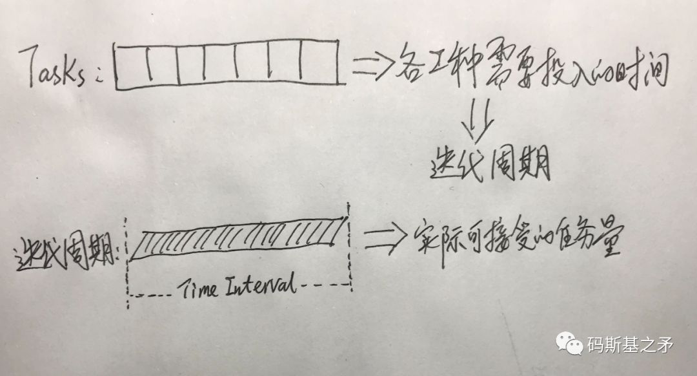
迭代变体中，这个时间周期如果大于3~4周，则应考虑将任务集拆分成多个迭代。在项目开发前期、有大范围的功能待开发时常常使用这种迭代变体，也可以适具体情形灵活穿插在不同迭代中。（关于迭代更多细节，请参阅「我们怎样进行研发迭代？」）与管理层对以上达成共识很重要，不然你的长期计划太过粗糙、缺乏说服力，短期又在频繁做计划、团队似乎很浪费时间，这将不足以获取足够的支持来达成目标。
另外，敏捷规划鼓励管理者或项目高层决策者一起参与到项目规划中来（只要时间允许）。团队将迭代计划、需求列表、开发进度等均纳入SaaS工具系统进行管理，管理层可随时查看项目状态。
任务规模和团队生产力度量
确定了迭代的用户故事集后，团队需要着手估算用户故事点并拆解为 Task (估算和拆解的工作也常在 Refinement 会议完成)。如下所示，一个经过估算并拆解后的迭代用户故事集：
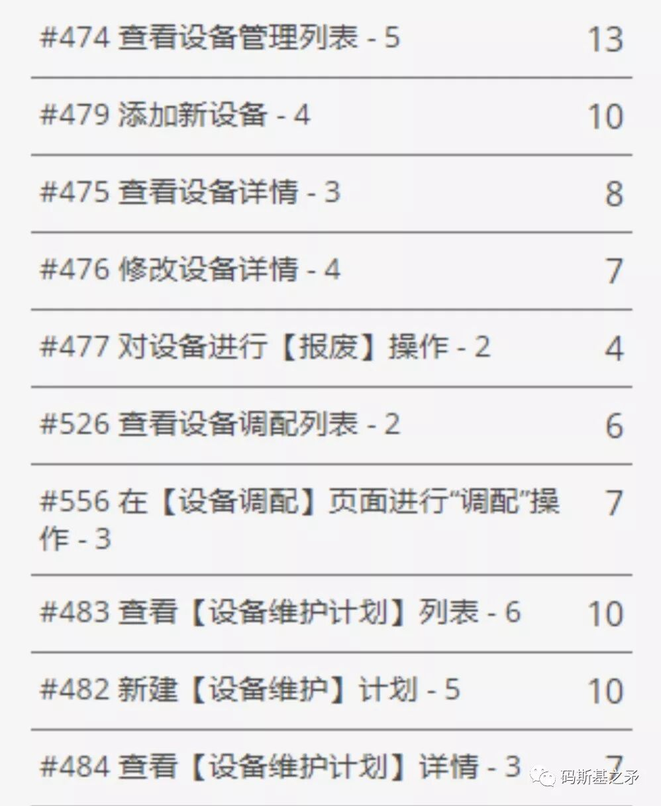
图中每个“故事描述”后面的数值为故事点数，最右边一列的数值为拆解出的Task需花费的小时数估算（统计后总故事点数为37，需要投入的工作小时数为82）
Task常以不同工种工作内容作为拆分依据，每个用户故事所需的总工作小时数，为各Task小时数之和。如下图所示，“API接口文档设计及开发”常作为后端工程师的开发任务，而“前端组件开发”则往往成了前端工程师的工作。
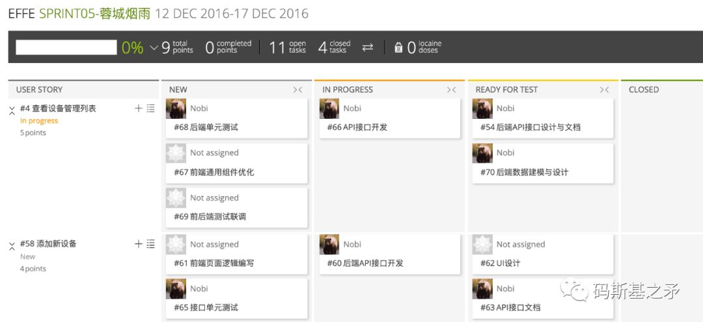
每个Task所需要的工作小时数，可由各工种的工程师（或任务负责人）根据自身经验单独来估算。
要注意的是，用户故事的点数和故事内包括的任务总小时数，是一个用户故事的两个维度的规模度量值（更多关于故事点，请参阅「Scrum，一个橄榄球术语…」）。
故事点数更多用于在迭代的宏观层面描述团队的整体迭代速度，如团队在迭代完成100个故事点功能开发，则团队迭代速率为100点/迭代（也可考虑每周多少故事点）。如果已进行了多个迭代，则可由此计算团队平均迭代速率。这个历史数据，可作为团队后续迭代计划中可接受多少新开发任务的估算参考。
团队对自身迭代速度估算，初始并不能做到清晰、明确。好比写一本小说，刚开始写的时候可能预测自己一天至少能写5k（5千字），实际进行中发现一天只能写出1k，有时甚至很多天写不出一点儿东西。后面写得越多、经验技巧提升后速度会逐渐趋于稳定，每天能产出3-4k左右。团队的开发迭代速度也是这般。
用户故事总小时数，则主要用于与团队整体“实际可投入工作小时数”进行匹配，以决定团队在迭代计划内真正可接受的任务量。
为了计算“团队实际可投入小时数”，先看下面一个简化的例子：
迭代计划任务量：用户故事点90，分解出的任务总小时数200；
团队工种构成：后端工程师2人、前端工程师2人、UI设计1人；
迭代周期：2周（除去周末共10天，每天按8小时计算）；
投入因子：选取0.6（一天8小时，实际心流状态可全情投入工作时间仅为4.8小时）。
根据以上数据，计算出团队实际可投入小时数为：5*10*8*0.6 = 240 hrs。这个值大于计划的任务量小时数200。
初看起来，2周的迭代内团队完成这90个故事点、200个小时的工作任务是完全没问题的。但实情可能是，这200小时的任务量构成为：后端需投入120hrs（hours)、前端需投入60hrs、UI仅20hrs，团队其实很难完成这个任务。
进一步分析，团队后端仅2人、后端可投入时间仅为96hrs（2*10*8*0.6 < 120hrs），在不增加后端人手的情况下，后端实际约需要13天（120 / 2*8*0.6）才能完成任务。这样整个团队完成迭代任务实际就需要13天，而在这个迭代内前端仅需投入7天，UI只要5天。如果这2周迭代时间已确定，那显然团队需要将计划的任务量消减到可完成范围内。
所以，在迭代进行中，一个团队内部的各工种工作量常常是不均衡的。某个工种多出来的时间，可规划别的工作内容或者引导迭代工作往前走。
通过先选取新迭代中团队计划要完成的用户故事集（计算出任务量总小时数），然后计算出团队实际能投入的小时数，再参考团队的历史迭代速度，三者比较后即可确定团队在迭代中真正可接受的任务量。
这样的工作量度量方式，使得团队成员每天的工作投入基本是饱和的，想懈怠工作比较困难。团队成员每天工作的投入度，另有任务面板可时时查看，有早会机制可监督、同步。
对于绝大部分职场人士，平均投入因子能做到0.6已是很可贵。它已去除并兼顾了迭代里的流程管理开销、沟通环节、人的状态变化及组织内部其他干扰。
让团队加班加点，或可提高一点投入因子，能达到0.7~0.8已是极端优秀。但自驱动力强的人，在工作时间高度专注、高强度投入，达到投入因子要求后，到点就该准时下班了。
由此，传统管理者可能会认为，敏捷是“偷懒的文化”，觉得按固定的迭代周期和投入因子式的行动方式输出相应的工作成果，与公司确定的、按时间节点交付业务目标许多时候相违背。但这样思考的管理者，或应该尝试多了解团队采用的项目规划方式，从而设定更科学合理的业务目标。
如果管理者不希望看到那种上班时间“偷着摸鱼”、下班时间“尽情表演”的恶性氛围形成，应该能做出明智的选择。
结语
总之，通过鼓励管理层积极参与到项目规划中来，采用量化、有数据可依的工作任务估算方式，建立SaaS工具体系让进度清晰可视，促进了研发计划与工作进展的透明，有助于建立组织上上下下的互信。
当然，团队在项目规划方式上的变通也是必要的。许多时候，高层管理者也会希望能在项目迭代开始前提前了解项目工期和预算，以便于进行前期决策和业务规划，即便这时团队会告诉管理者，“我们只有深入到项目开发过程中、知道更多细节、甚至完成几个迭代后，才能给出详细的计划和较准确的项目工期”。
若考虑到大部分外包项目，客户也常要求研发团队能先提供一个预算和工期，不然客户心里没谱、没法进一步决策，这样团队也就更能理解管理者的上述要求了。这时“帕金森定律”总会来干扰项目计划者，而此时“只在唯一的环节设置冗余时间”就显得十分必要了。
所以，“敏捷”的广而传播和深入推行，研发团队责任首当其冲自不必多说，客户(用户)、组织管理者及其他利益相关者的积极参与，也十分必要。工程与管理方法论的进步，需要全民努力。
第10讲 Mike Cohn 谈敏捷估算：使用「水桶方法」估算工作量

图源Mike Cohn博文，版权归原作者所有。
译注：用户故事点估算为什么不可能精确？除了“规划扑克”，还有什么有效的估值方法和策略？本文讨论的“水桶方法”解答了这几个问题。原文来自敏捷先驱之一Mike Cohn的博客文章：Story Point Estimates: For Accuracy, Use Ranges & Round Up。在不影响内容理解的情况下，为简洁起见，译文中许多地方将Product Backlog Item这一英文概念翻译为“用户故事”（或故事，虽然它与故事并不完全是一回事）。
进行故事点估算时，大部分团队会使用某个预先定义的、不包含所有可能情况的数值范围来进行，如团队会使用一个2次幂的序列（1，2，4，8，16，…）、或斐波那契数列（1，2，3，5，8，13，…）来进行这种估算。
通过有意将一些数值排除在可接受的估值范围之外，团队避免了陷入某些无休止的讨论之中。如某个故事到底该估值为15还是16，若真要达到“是15还是16”那样的估算精确度，一般是非常困难和耗时的，通常也不可能完成。
我常遇到有人提出这样的问题：我怎么能确定一个具体的用户故事（Product Backlog Item）估值为8还是13？
这篇文章里，我将尝试用“水桶估值法”来部分解答该问题。
假如你有10升的水要储存，并且你有一个8升的桶和一个13升的桶。你会选择用哪个桶来存储这些水？
显然，你会选择13升的那个桶。10升水没法装进8升的桶，水会溢出。
进一步推断，你还会用13升的桶来装入体积在9升到13升这个范围的水。如果你有14升的水，你就需要一个比13升更大的桶了。
这个思考策略与故事点估算是一致的。考虑将每个预设的参考估值作为一个桶，所有体积在这个桶与邻近的小一号桶之间的用户故事都可以用这个”估值桶”（估值范围）来装。例如，许多团队在使用“规划扑克”玩敏捷规划游戏时，会采用一种调整后的斐波那契数列：1、2、3、5、8、13、20、40、100。13这个参考数值，可用于故事点大于8、且小于等于13之间的所有故事的估值。
即，每个故事点估值的隐含意义是一个估值范围–正如一个桶可以存储在其容量范围之内各种体积的水，问题的关键在于如何选择合适的桶。
选择合适的桶
要得到更准确的估算和计划，团队需要转变思路：他们不是在给某个用户故事估一个数值，而是要想办法为这个故事找一个合适的“估值桶”。我知道很多时候人们在做故事点估算时，习惯的做法是拿支笔、为某个用户故事写个数字，但更好的思路应该是找一个能装下这个故事的足够大的数字（桶）。
所以，估算时的推荐做法是：让团队成员想象自己面前有一堆标有数字1，2，3，5，8，13，…(或其他序列)的桶，对每个故事进行估值时，想象着将故事卡片扔进一个大小合适的桶里。
这有助于团队成员脱离“估算要完美和精确”的执念，因为这不可能做到。故事被扔进了合适的桶里，就已经达到估算的要求。
为什么“向上舍入估值法”是有效的？
你可能注意到，这种“向上舍入”（译注：指类似有9点的故事用13点的桶来装，这种做法使得估算都比实际故事点要大，类似四舍五入的做法）的估值方式有可能导致故事点膨胀（inflated or padded schedules）。我解释一下为什么这样的事不会发生。
假如你认为某个故事应该有10点，使用上面提到的斐波那契数列及向上舍入的估值策略，这个故事将被估值为13点。进一步，我们假设这个13点的故事因为太大而没法在一个迭代里完成，所以团队将它分解成3个小的故事，故事点分别为5，5，2。
这里注意数值发生的变化。这3个小故事加起来点数为12，这比前面13点的大故事估值少1点，却比最初大故事的合理估值10点多2点。
通过强行让估值向上舍入的方式，提升了准确预测项目交付日期的可能。
当然，如果你偏要使用“向下舍入”的方式给故事估值为8，项目将会产生4个点的延迟。而当你使用自己认为准确的估值10时，项目将又产生2个点的延迟。
所以，使用水桶方法及向上舍入的估值策略，你更可能按时交付项目。
但10点的故事难道真的不能是8个点吗？当然可能，但它也可能是14点或15点，或其他任何数字。
“水桶方法”和“向上舍入法”是有效的估算工具
“向上舍入估值法”不会导致估值膨胀–我在另一篇博文，“How to Prevent Estimate Inflation”里论述过该问题。相反，“水桶方法”结合“向上舍入法”，是估值不确定性的一种反映。将故事点视为一系列有容量限制的桶正好说明了这种不确定性，有助于制定更合理的项目计划。
第11讲 Mike Cohn 谈 Daily Scrum：你还在开没用的早会吗？
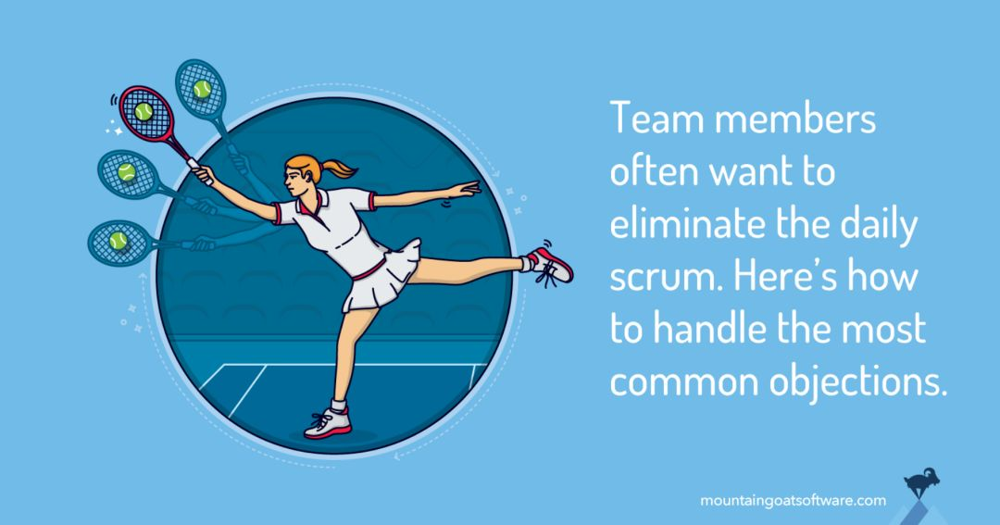
图源 Mike Cohn 博文，版权归原作者所有。
译注：实践敏捷/Scrum 的人，大部分都经历过每日早会（Daily Scrum）的困扰。怎样才能长期坚持地开好早会？早会有哪些实质意义？本文即关注于解决团队内部拒绝开早会或对早会持异议的处理方法，以及提供开好早会需要注意的关键点。原文来自敏捷先驱之一 Mike Cohn 的博客文章《Overcoming Four Common Objections to the Daily Scrum》。
我完全能理解一些团队成员对早会（Daily Scrum Meeting）的抵制，我也不喜欢早会。但一些会议是有益且值得投入的，我把”有效的早会”归入这值得投入之列。这篇文章里，我将分析 4 种常见的有关早会的异议，提出应对方法，同时给出一些开好早会的关键点。
四种常见的早会异议
异议一：“我们平时已经说得够多了”
第一个有关早会的异议是：团队成员平时彼此交流已经很频繁，早会是不必要的成本浪费。
听到这个异议时，我一般会这样反馈：团队成员确实每天都交流很频繁，但大家很少集中在一起交流。早会提供了团队成员一起交流的机会。对很多团队来说，早会是每天唯一的、每个成员可以跟团队内其他成员同时交流的时间。
异议二：“从没讨论过什么重要的事”
第二个有关早会的异议是：早会从来没讨论过什么重要的事情。
给早会设定合理的期望——处理这个异议时，我做的第一件事是与反对者一起设定合理的早会期望。我很清楚，没法确保每次早会都有重要的事情讨论：某些时候早会确实是没什么用，比如前一天每个人都取得了不错的进展、但也没什么特别亮眼的，且对于今天的工作也没人提出任何问题。但大部分情况下早会对团队是有帮助的，因为许多早会及时讨论了重要事项，避免了（或取代了）那些频率更低的乏味无用的会议。
确认异议是否合理——我做的第二件事，是考虑这个异议是否合理。如果合理，这对 Scrum Master 来说是一个早会需要改进的信号。若早会中有以下一些错误表现，那异议就是合理的：参与者讨论偏题而不加以约束、会议太长、会议参与者没有共同目标。最后一个错误表现，则说明成员各自做着完全不相关的项目。
异议三：“为什么不通过 Email 来交流？”
一些团队成员并非抵制每天与团队同事检查、同步工作信息，而是觉得这些事不该以会议的形式来进行。他们常要求不开早会，而以每天发 Email 代替这种需要”人在场”的沟通形式。
但我很少看到 Email 会有效果。最大的问题是大部分人不会去读邮件，或者要读也是 1～2 天之后的事，这样团队没法及时反馈问题。而且，以 Email 的形式进行每日沟通也丧失了即时讨论的所有好处，面对面早会才有这种好处。
如果用 Slack（译注：带即时通讯功能的团队协作工具，整合了邮件、短信、搜索等功能）或类似的工具呢？我的回答是一样的。但我也注意到有团队借助 Slack、以一种类似早会的形式沟通而获得成功。我不知道这是否是新工具带来的变化，或者是即时通讯与 Email 沟通有根本上的区别。对大多数团队来说，我仍然不提倡以基于 Slack 的类早会沟通形式取代每天的面对面交流互动。这对一些工作地域很分散的团队，或许很有效果。
异议四：“早会时间太长了”
第四个早会的异议是：会议时间太长了。
当然，如果会议时间超过几乎所有 Scrum 支持者规定的标准 15 分钟，你也会产生强烈的抱怨。但如果你的会议较好地控制在 15 分钟内、且还听到这样的抱怨，你最好的回应是询问任意一个反对者，他们认为早会应该多长时间合适。
你将会得到有用的回答，尤其是你提问的方式还夹带着一些”早会多长时间，能解决我们的 xxx 问题”的利好。比如，你可以问：“每天早会开多长时间，才更有助于我们可以每天同步信息、避免沟通问题、可视化每个人都在做什么、识别和纠正错误、建立信任、给自己以成就感？”
开好早会的 7 个关键点
上面的建议可以帮助团队成员克服参与早会最常见的异议或疑虑，甚而把早会引向更好的方向，让团队成员开始重视早会的价值。下面介绍一下开好早会的 7 个关键点：
1. 每天同一时间和地点进行
如果希望早会尽可能轻松容易，应考虑在每天同一时间和地点进行。
2. 准时开始
我的准时观念，和你遇到的任何人一样。有一次我甚至说服自己别打电话给医生，因为我可能会晚 1 分钟到他的办公室。我承认，一个开一整天的会议迟到几分钟也不是什么大事儿，对一个 8 小时的会议来说迟到 5 分钟也就 1% 的会议时间。但 Scrum 早会迟到就不是一件小事儿了。如果会议每天晚 5 分钟开始，准时到的团队成员一年中总共要浪费掉超过 20 小时等待会议开始。
3. 时间控制在 15 分钟以内
这也是很多团队站着开早会的原因：站立让团队意识到时间的宝贵与紧迫，并保持会议简短。
4. 目的是识别问题而非解决问题
通常，好的实践是早会结束后会立即讨论（或解决）问题。理想情况下，仅需要一部分团队成员参与会后讨论，其他成员则回到自己的办公位上。
5. 参与者话题要聚焦
大多数团队在早会时遵循的流程都是：团队每个人陈述一下自上次早会结束以来自己做了些什么，接下来计划做什么，有什么问题阻碍。任何超出这一范围的讨论都应该被制止。
6. 团队共同推动规则执行，而非仅靠 Scrum Master 一人
当 Scrum Master 是唯一的会议规则推动者时，会议就成了 Scrum Master 的存在秀。这会让早会成了一个进度汇报会议，每个参与者都只为了 Scrum Master 的存在而提供状态。
7. 仅限团队成员发言并讨论
团队里每个人都应该参与早会。团队之外的人允许作为会议观察员（旁听者），但不应该参与到团队讨论中，除非有团队成员向某个观察员提问。一旦早会结束且团队成员还未散去，许多团队会问观察员是否有什么问题，Scrum Master 或部分团队成员会留下来处理这些问题。关键点是，观察员的评论或问题不应纳入后续早会的讨论范围。
第12讲 一个普通程序员的「极简」敏捷开发实践史
「敏捷方法」源于一群软件工程师的创造，由此有了很深的工程技术烙印。理解软件技术思想、深度参与软件开发，也成了敏捷实践者的必由进阶之路。纯粹的管理型敏捷实践者，较难真正理解敏捷，也就比较难得到工程师这个有鲜明个性特点的群体的广泛认可。
个人的敏捷实践之旅，技术的精进与敏捷管理的领悟相伴而行，因为技术工程师的内核终究是难去掉的。
2007年：初识敏捷
在读研期间开始接触XP(极限编程)，初次尝试TDD（测试驱动开发）；
开始尝试「用户故事及故事点估算」整理需求；
技术体系基于Java、早期的SSH(Struts/Spring/Hibernate)框架体系。
2008-2009年：建立系统化软件工程方法
陆续涉猎《重构》、《敏捷开发：原则，模式与实践》、《Head First OOA&OOD》、《软件工程：实践者之路》等经典著作，建立全面的工程敏捷技术方法体系；
2008年进入外企实习，接受了3天Scrum培训；
为练习重构，开发了一款桌面端小游戏；
在研究生导师的科研项目中带队实践XP方法。
2010-2011年：敏捷价值观及管理实践深度认知
涉猎敏捷著作《轻松敏捷之旅》、《硝烟中的Scrum和XP》、《用户故事与敏捷方法》、《敏捷估算与规划》；
工作中Java为主技术开发语言，参与电商平台开发；
2011年曾负责某航空公司内部项目，带领8人团队、主导推行敏捷/Scrum方法。
2012-2018年：主导实施敏捷
涉猎软件经典《敏捷软件开发》(Mike Cohn)、《领域驱动设计》(Eric Evans)；
2012年开始转战Python技术体系，在团队推行敏捷/Scrum
2014年开始创业，尝试用精益方法规划产品，用敏捷/Scrum管理团队；
初期敏捷实践，形式化模仿痕迹较重；熟练后，做到视团队及项目情况修改敏捷各实践方法。
2018年以后：在多团队推行敏捷
在组织级别(多个团队）推行敏捷管理及工程实践方法；
在公司层面用OKR进行目标管理，在各跨职能小团队(12人以下）深度实践Scrum；
产品规划（尤其是创新型产品）中使用精益；
积极推广、宣传敏捷方法，参与和组织敏捷社区活动。
上文所提及书单列举如下，这些书籍都是软件领域公认的经典之作，有兴趣可进一步阅读（注：非广告软文，单纯觉得书好）。
工程实践篇

敏捷管理篇
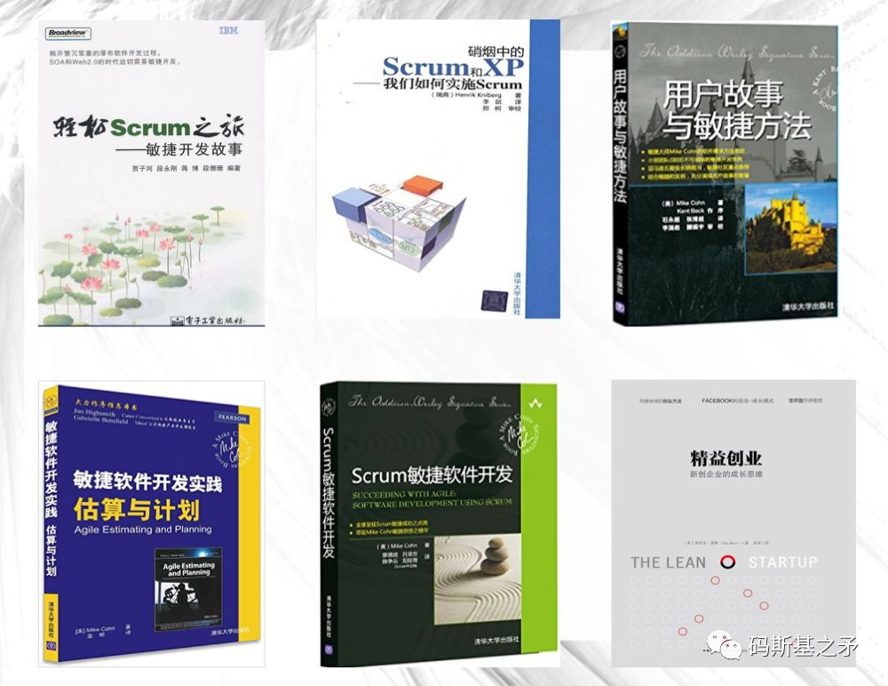
第13讲 「敏捷开发」难道是教条主义？
📺 配套视频：第2部分：敏捷开发与瀑布 · Bilibili 囧森Jonshon
早期的敏捷宣言，提出了一种软件开发的价值观导向，这意味着具体的实践方法可以是多种多样的。比如，敏捷中最重要的4个实践与方法论体系：
Scrum：侧重项目计划、需求管理、团队的迭代与学习，简言之，即偏重于项目管理实践方面；
XP（极限编程）：侧重在工程实践，如最重要的核心技术实践有：代码重构、TDD(测试驱动开发)、持续集成、代码规范等；
Lean（精益）：更多适用于产品创新，以应对极不确定的市场环境与需求变化，尤其是这些年互联网创业的浪潮，更推动了这套方法论的发展。MVP（产品最小可行集）可谓该体系的核心概念；
DevOps：把运维纳入敏捷迭代计划一起考虑，补足了传统敏捷规划中对项目运维/持续交付的考虑欠缺。
这4套方法体系，互为补充和依存，在一个完整的研发生态里是存在即合理、都是需要的。在成熟的组织或团队里，4种方法论都在使用或是惯常现象。 理论与价值观，往往源于实践的总结与提炼，理论的发展也推演出了新的实践。所以，我们并不会确定性地说“敏捷宣言”诞生后，才产生了这些实践方法。
而理论与方法，总归是要发展以适应当代最新情况的，如果20年前的理论或方法仍被我们奉为圭臬，金科玉律般不可改动分毫，这就有了教条主义的倾向。发展理论、创造新实践，也就成了当代敏捷实践者的历史使命（哪怕它以后不叫“敏捷”了）。
第14讲 敏捷 Scrum 与团队角色，也谈敏捷的工程中心主义
📺 配套视频：第3部分：敏捷中的 Scrum 与团队角色 · Bilibili 囧森Jonshon

题图来自网络，版权归原作者所有
所谓敏捷研发的工程中心主义，即指在软件研发中以技术工程师为主导、来制定产品计划、迭代计划，产品/需求等与开发工作统一纳入敏捷管理框架之内。
论起渊源，敏捷开发宣言，肇始于一群叛逆的程序员，敏捷方法最初也更多为了服务于软件开发。这也成了硅谷等互联网/软件产业繁荣之地“工程师文化”兴盛的由来。
“主导”意味着在团队内的Power（权力）。依人类（组织结构心理）目前的进化程度，还远没有达到一个团队可以在没有Leader的情况下完全靠自组织、自驱动而运作得很好的（这就是“官本位”）。团队里，人们总希望有一个Leader的管理角色，来规划与统领全局。
一个产品经理，如果有较强的产品能力、有技术背景、深谙敏捷管理之道，对商业与市场有很强的感觉，那这个人将是团队Leader的不二人选；一个技术工程师，若具备扎实的技术功底与技术规划能力、手到擒来的敏捷能力，对产品与市场也有自己敏锐的洞见，这个人也同样适合Leader。
从长期匹配度而言，团队是技术主导、还是产品主导，由Leader本身的能力结构与能力强度决定，这是一种衍生的自然权威。
但敏捷方法中理想的管理模式应该是：
拆分管理者的角色，把原本属于一个管理者的职责，分给3个人。其中，“产品负责人”(Product Owner)主管产品，负责产品开发相关的具体事务。“人事领导”主管人，给团队里的每个人做职业规划和指导。“敏捷教练”(Scrum Master)主管流程，关注团队的任务和目标，给成员及时提供支持和指导，充当团队的润滑剂。这三个角色彼此互补。得到：如何应对“反升迁”趋势？
对敏捷/Scrum一知半解的大部分国内团队，软件研发中的产品/需求分析工作，常常独立于用户故事（User Story）的需求管理体系之外：产品经理自己独立写PRD（需求分析说明书）、画线框图，按自己的方式规划产品工作任务，然后输出一些文档给工程师团队。 推崇敏捷方法的工程师则希望产品迭代、发布计划等，一同纳入敏捷迭代里进行管理，这样才能真正敏捷。在迭代进行中，工程师自然而然就开始掌握了主导权，因为对细节的深入才有望真正理解问题，而工程师还掌握着问题解决的最有效武器（技术）。
但产品经理（或业务分析师们）不一定认同或愿意这样，因为这就等于丧失了Power。这也就是很多国内产品经理不懂敏捷或不愿意推行敏捷、不愿意跟工程师一起走敏捷迭代的根源，除非他是团队的Leader。
举两个例子：
类似Tower.im这样的项目协作工具，其研发过程就是典型的产品与开发迭代分离的过程。从团队的公开发文了解到，团队在构建这个产品的过程中是产品及设计人员占主导（这本是一家UI设计起家的公司）、或至少产品与工程开发是平行独立的。再观其产品本身，你只能用它来规划开发迭代（Sprint），并不便于进行Release（产品版本）的计划。（说明：此处仅为说明问题而举例）
这与“大环境”的做事方式也是一致的，毕竟“我们”一直是业务驱动、业务中心的。
同样作为项目协作工具，早期的Scrumworks等，工程中心主义则更明显。其产品功能基础是：整个产品功能的规划、发布计划(Release Plan)都纳入了Product Backlog（功能待办清单），分成多个Release，一个Release则可能分割成多个迭代（Sprint）。这要求产品经理以用户故事来规划和管理需求。
我曾负责过的项目，产品经理与工程师不配合的情况那也是有的：产品经理希望按自己的方式整理产品需求、定义工作计划，不愿意参与到Scrum流程中来。但工程师们觉得，没有产品经理参与、Scrum没法更好地运转，矛盾由此产生。为此还花了不少时间、心力去解决。
TED 演讲视频：用敏捷方法，解救你混乱的家庭管理和孩子教育问题
📺 配套视频：将敏捷开发引入家庭教育，让孩子们学会自我管理 · Bilibili 囧森Jonshon
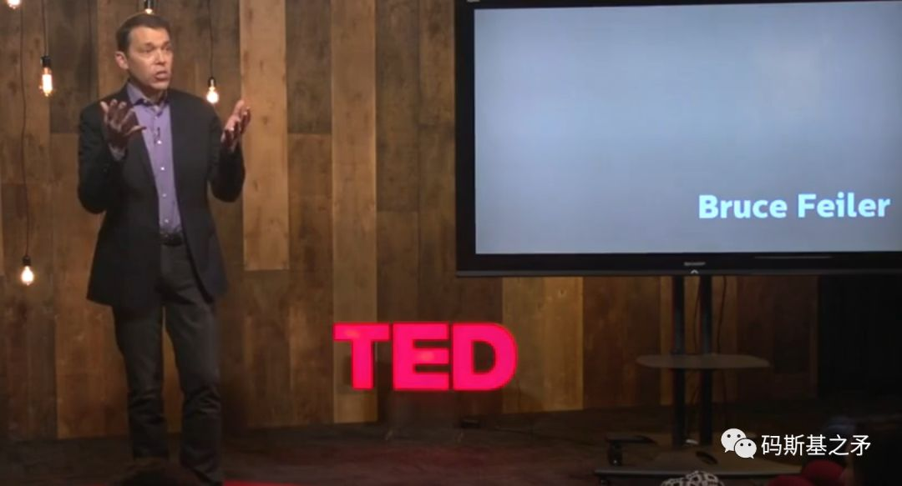
图源：TED演讲视频截图 编注：视频内容来源于纽约时报畅销书作家、家庭问题专家Bruce Feiler的TED演讲：《将敏捷开发引入家庭》。
导读
绝大部分家庭都陷入了混乱，处于崩溃或不幸之中。作为父母，常常自顾不暇、太忙太累，而顾不上耕耘亲密关系或对家庭成员缺乏耐心。 孩子们想要的只是父母更多的陪伴吗？如果倾听孩子们内心真实的声音，他们其实希望父母少累一点、少一些压力，由此让家庭关系更亲密。
传统的家庭管理方式，父母总是理所当然的一家之权威。家长式的命令与控制教育，孩子要么成了听话的没有自主能力的乖乖宝，要么催生叛逆变成问题少年。而家暴也常成为这一教育方式下产生的普遍结果。
让孩子培养自我管理、独立生存的能力，是家庭教育的核心问题。怎样培养这种能力？如何让自己的孩子做好充分的准备走入这个社会？幸福的家庭都做对了什么？我们能从他们那里学到什么而让自己的家庭更幸福？本视频给了可信服的答案。
视频来源于纽约时报畅销书作家、思想家Bruce Feiler在2013年TED的演讲：《将敏捷开发引入家庭》（Agile Programming–for your family）。Bruce Feiler将流行于软件开发领域的敏捷开发思想，引入家庭管理和孩子的教育中，以一个父亲的亲身经历，分享了家庭教育中的问题及敏捷思想对解决问题的有效性。
“随时调整适应、给孩子们权利、给孩子讲述你的故事”，是他在演讲中给出的答案。“你不需要什么宏大的计划，你只需要行动，迈出一小步，积累小胜利”，“幸福家庭的秘密是什么？是尝试”。Just Try It！
附录 A · 视频清单
Bilibili 空间：囧森Jonshon
| 视频 | 链接 | 对应章节 |
|---|---|---|
| 第1部分 · 从习惯谈敏捷研发 | BV号 | 讲2 配套 |
| 第2部分 · 敏捷开发与瀑布 | BV号 | 讲13 |
| 第3部分 · 敏捷中的 Scrum 与团队角色 | BV号 | 讲14 |
| 第4部分 · 敏捷需求管理与 UserStory | BV号 | 补充（公众号无对应文章） |
| TED · 将敏捷开发引入家庭教育 | BV号 | 扩展阅读 |
附录 B · 推荐书单
源自第 12 讲《一个普通程序员的「极简」敏捷开发实践史》文末书单，分为「工程实践篇」与「敏捷管理篇」。均为软件领域公认经典（注：非广告）。
工程实践篇
敏捷管理篇
文字版书目（便于检索）
工程实践
- 《重构》
- 《敏捷开发：原则，模式与实践》
- 《Head First OOA&OOD》
- 《软件工程：实践者之路》
- 《领域驱动设计》（Eric Evans）
敏捷管理
- 《轻松敏捷之旅》
- 《硝烟中的 Scrum 和 XP》
- 《用户故事与敏捷方法》
- 《敏捷估算与规划》
- 《敏捷软件开发》（Mike Cohn）
关于作者
囧森Jonshon
软件工程师、前敏捷研发教练。关注敏捷方法实施、软件研发效率与团队协作。 作者当前业务重点领域：AI 工作流落地与实施、FDE，帮助企业及个人将AI导入生产生活日常。
- 公众号：悬想录（ID: muskie_lance）
- X/Twitter：@realjonshon
- 抖音：囧森Jonshon / jon.shon
- Bilibili：囧森Jonshon